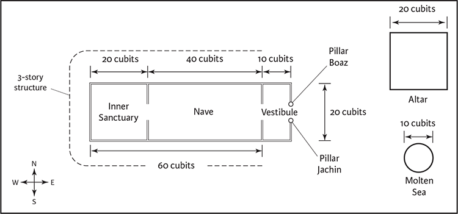
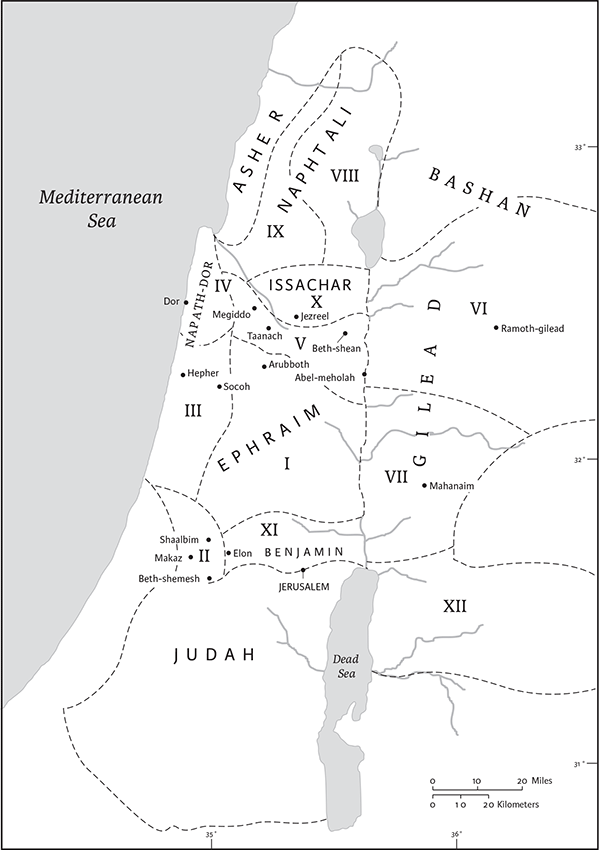
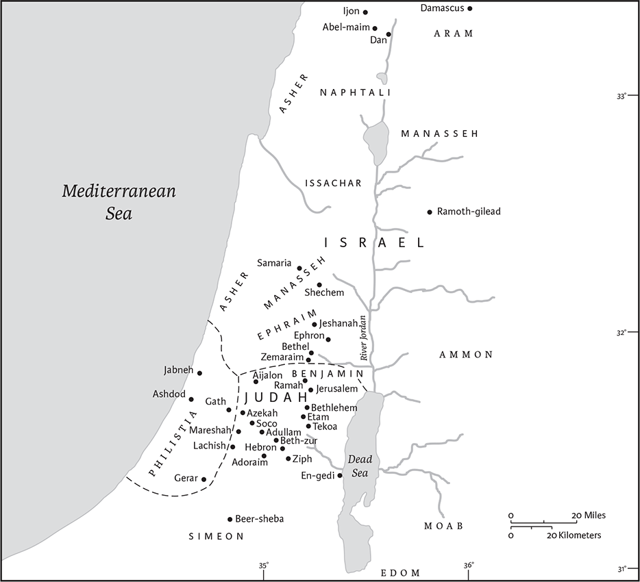
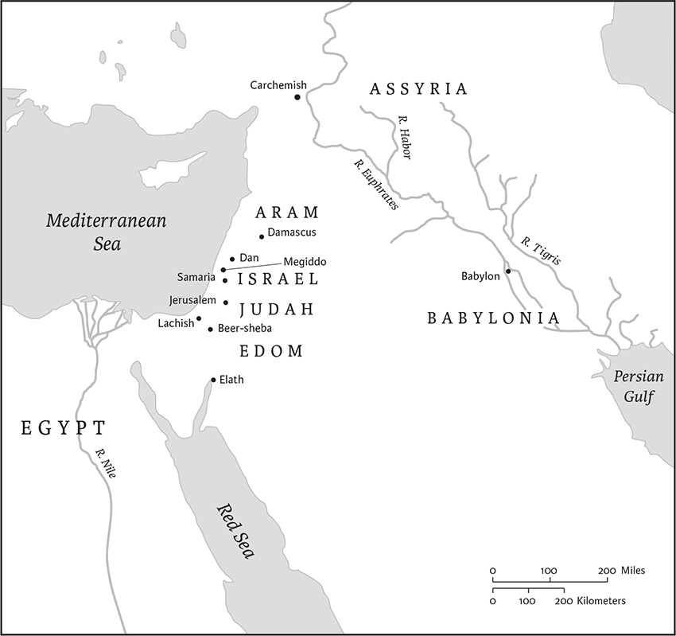
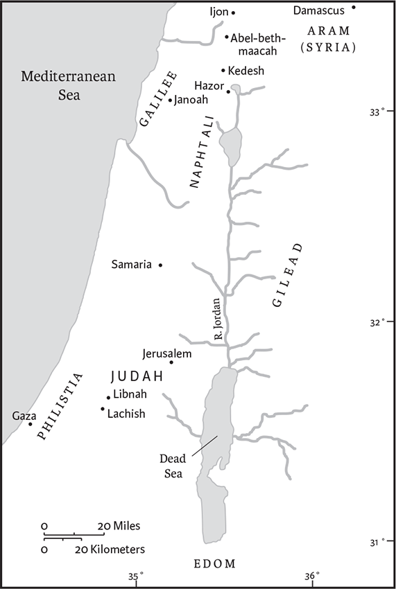
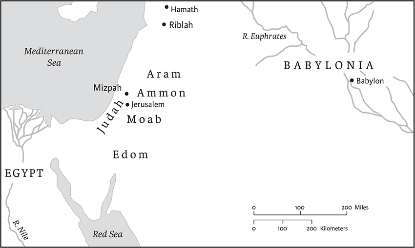

2 Chronicles
2 Paralipomenon in Greek
Second Chronicles is a continuation of First Chronicles, and the two originally formed one book, as they still do in the traditional Hebrew text. (For an introduction to this work, see the Introduction to 1 Chronicles, pp. 583–85.) The organization of 2 Chronicles falls into two major parts: the reign of Solomon (chs 1–9) and the kingdom of Judah (chs 10–36). In Chronicles the tenure of Solomon represents the apex of Israelite history, a time of unprecedented glory, prosperity, and peace. If David’s reign was highly successful because David consolidated Israel’s international position and prepared for the long‐awaited Temple, Solomon’s reign was even more successful because he brought these plans to fruition. Accordingly, much space is devoted in chs 2–7 to the construction, furnishings, and dedication of this national edifice. As the home of the ark of the covenant and the tabernacle, the Temple represents the continuation and fulfilment of earlier Israelite religious institutions. The careful attention given to the Temple and its worship reflects the importance that the Chronicler ascribed to this institution in the postexilic era. For the author, the Temple is the divinely sanctioned place for both sacrifice and prayer (6.1–7.22). The stress on prayer is also present in the book of Kings, but not emphasized throughout the Judahite monarchy, as it is in Chronicles.
The Chronicler’s account of the divided monarchy differs in many respects from that found in 1 and 2 Kings, even though he draws heavily from his version of Kings to write his own work. The writer ignores the independent history of the Northern Kingdom because he regards both the kingship and the sanctuaries of this new state as an affront to God (13.4–12). The choice not to recount the record of northern Israel also means that the stories of northern prophets such as Elijah and Elisha are not found in Chronicles. The author does add, however, much coverage to the Southern Kingdom of Judah, including a letter from Elijah to a southern king (2 Chr 21.12–15). Some of the material unique to Chronicles reflects well on the reigns of major Judahite monarchs, such as Asa (chs 14–16), Jehoshaphat (chs 17–20), Hezekiah (chs 29–32), and Josiah (chs 34–35). Throughout his presentation, the Chronicler exhibits a keen concern for all Israelite tribes. The Chronicler criticizes the Northern Kingdom and its monarchs, but he still considers the northern tribes as Israelite and shows a sustained interest in their contacts with Judah. In the latter part of its history, Judah lost ground to its enemies and was exiled from its land to Babylon (586 bce). A major concern of the Chronicler is not only to trace this decline, but to explain it and to commend the reforms aimed at reversing it. On the whole, he presents a more optimistic version of this period than do the authors of Kings.
Gary N. Knoppers
1 Solomon son of David established himself in his kingdom; the Lord his God was with him and made him exceedingly great.
2Solomon summoned all Israel, the commanders of the thousands and of the hundreds, the judges, and all the leaders of all Israel, the heads of families. 3Then Solomon, and the whole assembly with him, went to the high place that was at Gibeon; for God’s tent of meeting, which Moses the servant of the Lord had made in the wilderness, was there. 4(But David had brought the ark of God up from Kiriath‐jearim to the place that David had prepared for it; for he had pitched a tent for it in Jerusalem.) 5Moreover the bronze altar that Bezalel son of Uri, son of Hur, had made, was there in front of the tabernacle of the Lord. And Solomon and the assembly inquired at it. 6Solomon went up there to the bronze altar before the Lord, which was at the tent of meeting, and offered a thousand burnt offerings on it.
7That night God appeared to Solomon, and said to him, “Ask what I should give you.” 8Solomon said to God, “You have shown great and steadfast love to my father David, and have made me succeed him as king. 9O Lord God, let your promise to my father David now be fulfilled, for you have made me king over a people as numerous as the dust of the earth. 10Give me now wisdom and knowledge to go out and come in before this people, for who can rule this great people of yours?” 11God answered Solomon, “Because this was in your heart, and you have not asked for possessions, wealth, honor, or the life of those who hate you, and have not even asked for long life, but have asked for wisdom and knowledge for yourself that you may rule my people over whom I have made you king, 12wisdom and knowledge are granted to you. I will also give you riches, possessions, and honor, such as none of the kings had who were before you, and none after you shall have the like.” 13So Solomon came froma the high place at Gibeon, from the tent of meeting, to Jerusalem. And he reigned over Israel.
14Solomon gathered together chariots and horses; he had fourteen hundred chariots and twelve thousand horses, which he stationed in the chariot cities and with the king in Jerusalem. 15The king made silver and gold as common in Jerusalem as stone, and he made cedar as plentiful as the sycamore of the Shephelah. 16Solomon’s horses were imported from Egypt and Kue; the king’s traders received them from Kue at the prevailing price. 17They imported from Egypt, and then exported, a chariot for six hundred shekels of silver, and a horse for one hundred fifty; so through them these were exported to all the kings of the Hittites and the kings of Aram.
2b Solomon decided to build a temple for the name of the Lord, and a royal palace for himself. 2cSolomon conscripted seventy thousand laborers and eighty thousand stonecutters in the hill country, with three thousand six hundred to oversee them.
3Solomon sent word to King Huram of Tyre: “Once you dealt with my father David and sent him cedar to build himself a house to live in. 4I am now about to build a house for the name of the Lord my God and dedicate it to him for offering fragrant incense before him, and for the regular offering of the rows of bread, and for burnt offerings morning and evening, on the sabbaths and the new moons and the appointed festivals of the Lord our God, as ordained forever for Israel. 5The house that I am about to build will be great, for our God is greater than other gods. 6But who is able to build him a house, since heaven, even highest heaven, cannot contain him? Who am I to build a house for him, except as a place to make offerings before him? 7So now send me an artisan skilled to work in gold, silver, bronze, and iron, and in purple, crimson, and blue fabrics, trained also in engraving, to join the skilled workers who are with me in Judah and Jerusalem, whom my father David provided. 8Send me also cedar, cypress, and algum timber from Lebanon, for I know that your servants are skilled in cutting Lebanon timber. My servants will work with your servants 9to prepare timber for me in abundance, for the house I am about to build will be great and wonderful. 10I will provide for your servants, those who cut the timber, twenty thousand cors of crushed wheat, twenty thousand cors of barley, twenty thousand bathsa of wine, and twenty thousand baths of oil.”
11Then King Huram of Tyre answered in a letter that he sent to Solomon, “Because the Lord loves his people he has made you king over them.” 12Huram also said, “Blessed be the Lord God of Israel, who made heaven and earth, who has given King David a wise son, endowed with discretion and understanding, who will build a temple for the Lord, and a royal palace for himself.
13“I have dispatched Huram‐abi, a skilled artisan, endowed with understanding, 14the son of one of the Danite women, his father a Tyrian. He is trained to work in gold, silver, bronze, iron, stone, and wood, and in purple, blue, and crimson fabrics and fine linen, and to do all sorts of engraving and execute any design that may be assigned him, with your artisans, the artisans of my lord, your father David. 15Now, as for the wheat, barley, oil, and wine, of which my lord has spoken, let him send them to his servants. 16We will cut whatever timber you need from Lebanon, and bring it to you as rafts by sea to Joppa; you will take it up to Jerusalem.”
17Then Solomon took a census of all the aliens who were residing in the land of Israel, after the census that his father David had taken; and there were found to be one hundred fifty‐three thousand six hundred. 18Seventy thousand of them he assigned as laborers, eighty thousand as stonecutters in the hill country, and three thousand six hundred as overseers to make the people work.
3 Solomon began to build the house of the Lord in Jerusalem on Mount Moriah, where the Lord had appeared to his father David, at the place that David had designated, on the threshing floor of Ornan the Jebusite. 2He began to build on the second day of the second month of the fourth year of his reign. 3These are Solomon’s measurementsb for building the house of God: the length, in cubits of the old standard, was sixty cubits, and the width twenty cubits. 4The vestibule in front of the nave of the house was twenty cubits long, across the width of the house;a and its height was one hundred twenty cubits. He overlaid it on the inside with pure gold. 5The nave he lined with cypress, covered it with fine gold, and made palms and chains on it. 6He adorned the house with settings of precious stones. The gold was gold from Parvaim. 7So he lined the house with gold—its beams, its thresholds, its walls, and its doors; and he carved cherubim on the walls.
8He made the most holy place; its length, corresponding to the width of the house, was twenty cubits, and its width was twenty cubits; he overlaid it with six hundred talents of fine gold. 9The weight of the nails was fifty shekels of gold. He overlaid the upper chambers with gold.
10In the most holy place he made two carved cherubim and overlaidb them with gold. 11The wings of the cherubim together extended twenty cubits: one wing of the one, five cubits long, touched the wall of the house, and its other wing, five cubits long, touched the wing of the other cherub; 12and of this cherub, one wing, five cubits long, touched the wall of the house, and the other wing, also five cubits long, was joined to the wing of the first cherub. 13The wings of these cherubim extended twenty cubits; the cherubimc stood on their feet, facing the nave. 14And Solomond made the curtain of blue and purple and crimson fabrics and fine linen, and worked cherubim into it.
15In front of the house he made two pillars thirty‐five cubits high, with a capital of five cubits on the top of each. 16He made encirclinge chains and put them on the tops of the pillars; and he made one hundred pomegranates, and put them on the chains. 17He set up the pillars in front of the temple, one on the right, the other on the left; the one on the right he called Jachin, and the one on the left, Boaz.
4 He made an altar of bronze, twenty cubits long, twenty cubits wide, and ten cubits high. 2Then he made the molten sea; it was round, ten cubits from rim to rim, and five cubits high. A line of thirty cubits would encircle it completely. 3Under it were panels all around, each of ten cubits, surrounding the sea; there were two rows of panels, cast when it was cast. 4It stood on twelve oxen, three facing north, three facing west, three facing south, and three facing east; the sea was set on them. The hindquarters of each were toward the inside. 5Its thickness was a handbreadth; its rim was made like the rim of a cup, like the flower of a lily; it held three thousand baths.a 6He also made ten basins in which to wash, and set five on the right side, and five on the left. In these they were to rinse what was used for the burnt offering. The sea was for the priests to wash in.

The Temple of Solomon according to Second Chronicles
7He made ten golden lampstands as prescribed, and set them in the temple, five on the south side and five on the north. 8He also made ten tables and placed them in the temple, five on the right side and five on the left. And he made one hundred basins of gold. 9He made the court of the priests, and the great court, and doors for the court; he overlaid their doors with bronze. 10He set the sea at the southeast corner of the house.
11And Huram made the pots, the shovels, and the basins. Thus Huram finished the work that he did for King Solomon on the house of God: 12the two pillars, the bowls, and the two capitals on the top of the pillars; and the two latticeworks to cover the two bowls of the capitals that were on the top of the pillars; 13the four hundred pomegranates for the two latticeworks, two rows of pomegranates for each latticework, to cover the two bowls of the capitals that were on the pillars. 14He made the stands, the basins on the stands, 15the one sea, and the twelve oxen underneath it. 16The pots, the shovels, the forks, and all the equipment for these Huram‐abi made of burnished bronze for King Solomon for the house of the Lord. 17In the plain of the Jordan the king cast them, in the clay ground between Succoth and Zeredah. 18Solomon made all these things in great quantities, so that the weight of the bronze was not determined.
19So Solomon made all the things that were in the house of God: the golden altar, the tables for the bread of the Presence, 20the lampstands and their lamps of pure gold to burn before the inner sanctuary, as prescribed; 21the flowers, the lamps, and the tongs, of purest gold; 22the snuffers, basins, ladles, and firepans, of pure gold. As for the entrance to the temple: the inner doors to the most holy place and the doors of the nave of the temple were of gold.
5 Thus all the work that Solomon did for the house of the Lord was finished. Solomon brought in the things that his father David had dedicated, and stored the silver, the gold, and all the vessels in the treasuries of the house of God.
2Then Solomon assembled the elders of Israel and all the heads of the tribes, the leaders of the ancestral houses of the people of Israel, in Jerusalem, to bring up the ark of the covenant of the Lord out of the city of David, which is Zion. 3And all the Israelites assembled before the king at the festival that is in the seventh month. 4And all the elders of Israel came, and the Levites carried the ark. 5So they brought up the ark, the tent of meeting, and all the holy vessels that were in the tent; the priests and the Levites brought them up. 6King Solomon and all the congregation of Israel, who had assembled before him, were before the ark, sacrificing so many sheep and oxen that they could not be numbered or counted. 7Then the priests brought the ark of the covenant of the Lord to its place, in the inner sanctuary of the house, in the most holy place, underneath the wings of the cherubim. 8For the cherubim spread out their wings over the place of the ark, so that the cherubim made a covering above the ark and its poles. 9The poles were so long that the ends of the poles were seen from the holy place in front of the inner sanctuary; but they could not be seen from outside; they are there to this day. 10There was nothing in the ark except the two tablets that Moses put there at Horeb, where the Lord made a covenanta with the people of Israel after they came out of Egypt.
11Now when the priests came out of the holy place (for all the priests who were present had sanctified themselves, without regard to their divisions), 12all the levitical singers, Asaph, Heman, and Jeduthun, their sons and kindred, arrayed in fine linen, with cymbals, harps, and lyres, stood east of the altar with one hundred twenty priests who were trumpeters. 13It was the duty of the trumpeters and singers to make themselves heard in unison in praise and thanksgiving to the Lord, and when the song was raised, with trumpets and cymbals and other musical instruments, in praise to the Lord,
“For he is good,
for his steadfast love endures forever,”
the house, the house of the Lord, was filled with a cloud, 14so that the priests could not stand to minister because of the cloud; for the glory of the Lord filled the house of God.
6 Then Solomon said, “The Lord has said that he would reside in thick darkness. 2I have built you an exalted house, a place for you to reside in forever.”
3Then the king turned around and blessed all the assembly of Israel, while all the assembly of Israel stood. 4And he said, “Blessed be the Lord, the God of Israel, who with his hand has fulfilled what he promised with his mouth to my father David, saying, 5‘Since the day that I brought my people out of the land of Egypt, I have not chosen a city from any of the tribes of Israel in which to build a house, so that my name might be there, and I chose no one as ruler over my people Israel; 6but I have chosen Jerusalem in order that my name may be there, and I have chosen David to be over my people Israel.’ 7My father David had it in mind to build a house for the name of the Lord, the God of Israel. 8But the Lord said to my father David, ‘You did well to consider building a house for my name; 9nevertheless you shall not build the house, but your son who shall be born to you shall build the house for my name.’ 10Now the Lord has fulfilled his promise that he made; for I have succeeded my father David, and sit on the throne of Israel, as the Lord promised, and have built the house for the name of the Lord, the God of Israel. 11There I have set the ark, in which is the covenant of the Lord that he made with the people of Israel.”
12Then Solomona stood before the altar of the Lord in the presence of the whole assembly of Israel, and spread out his hands. 13Solomon had made a bronze platform five cubits long, five cubits wide, and three cubits high, and had set it in the court; and he stood on it. Then he knelt on his knees in the presence of the whole assembly of Israel, and spread out his hands toward heaven. 14He said, “O Lord, God of Israel, there is no God like you, in heaven or on earth, keeping covenant in steadfast love with your servants who walk before you with all their heart— 15you who have kept for your servant, my father David, what you promised to him. Indeed, you promised with your mouth and this day have fulfilled with your hand. 16Therefore, O Lord, God of Israel, keep for your servant, my father David, that which you promised him, saying, ‘There shall never fail you a successor before me to sit on the throne of Israel, if only your children keep to their way, to walk in my law as you have walked before me.’ 17Therefore, O Lord, God of Israel, let your word be confirmed, which you promised to your servant David.
18“But will God indeed reside with mortals on earth? Even heaven and the highest heaven cannot contain you, how much less this house that I have built! 19Regard your servant’s prayer and his plea, O Lord my God, heeding the cry and the prayer that your servant prays to you. 20May your eyes be open day and night toward this house, the place where you promised to set your name, and may you heed the prayer that your servant prays toward this place. 21And hear the plea of your servant and of your people Israel, when they pray toward this place; may you hear from heaven your dwelling place; hear and forgive.
22“If someone sins against another and is required to take an oath and comes and swears before your altar in this house, 23may you hear from heaven, and act, and judge your servants, repaying the guilty by bringing their conduct on their own head, and vindicating those who are in the right by rewarding them in accordance with their righteousness.
24“When your people Israel, having sinned against you, are defeated before an enemy but turn again to you, confess your name, pray and plead with you in this house, 25may you hear from heaven, and forgive the sin of your people Israel, and bring them again to the land that you gave to them and to their ancestors.
26“When heaven is shut up and there is no rain because they have sinned against you, and then they pray toward this place, confess your name, and turn from their sin, because you punish them, 27may you hear in heaven, forgive the sin of your servants, your people Israel, when you teach them the good way in which they should walk; and send down rain upon your land, which you have given to your people as an inheritance.
28“If there is famine in the land, if there is plague, blight, mildew, locust, or caterpillar; if their enemies besiege them in any of the settlements of the lands; whatever suffering, whatever sickness there is; 29whatever prayer, whatever plea from any individual or from all your people Israel, all knowing their own suffering and their own sorrows so that they stretch out their hands toward this house; 30may you hear from heaven, your dwelling place, forgive, and render to all whose heart you know, according to all their ways, for only you know the human heart. 31Thus may they fear you and walk in your ways all the days that they live in the land that you gave to our ancestors.
32“Likewise when foreigners, who are not of your people Israel, come from a distant land because of your great name, and your mighty hand, and your outstretched arm, when they come and pray toward this house, 33may you hear from heaven your dwelling place, and do whatever the foreigners ask of you, in order that all the peoples of the earth may know your name and fear you, as do your people Israel, and that they may know that your name has been invoked on this house that I have built.
34“If your people go out to battle against their enemies, by whatever way you shall send them, and they pray to you toward this city that you have chosen and the house that I have built for your name, 35then hear from heaven their prayer and their plea, and maintain their cause.
36“If they sin against you—for there is no one who does not sin—and you are angry with them and give them to an enemy, so that they are carried away captive to a land far or near; 37then if they come to their senses in the land to which they have been taken captive, and repent, and plead with you in the land of their captivity, saying, ‘We have sinned, and have done wrong; we have acted wickedly” 38if they repent with all their heart and soul in the land of their captivity, to which they were taken captive, and pray toward their land, which you gave to their ancestors, the city that you have chosen, and the house that I have built for your name, 39then hear from heaven your dwelling place their prayer and their pleas, maintain their cause and forgive your people who have sinned against you. 40Now, O my God, let your eyes be open and your ears attentive to prayer from this place.
7 When Solomon had ended his prayer, fire came down from heaven and consumed the burnt offering and the sacrifices; and the glory of the Lord filled the temple. 2The priests could not enter the house of the Lord, because the glory of the Lord filled the Lord’s house. 3When all the people of Israel saw the fire come down and the glory of the Lord on the temple, they bowed down on the pavement with their faces to the ground, and worshiped and gave thanks to the Lord, saying,
“For he is good,
for his steadfast love endures forever.”
4Then the king and all the people offered sacrifice before the Lord. 5King Solomon offered as a sacrifice twenty‐two thousand oxen and one hundred twenty thousand sheep. So the king and all the people dedicated the house of God. 6The priests stood at their posts; the Levites also, with the instruments for music to the Lord that King David had made for giving thanks to the Lord—for his steadfast love endures forever—whenever David offered praises by their ministry. Opposite them the priests sounded trumpets; and all Israel stood.
7Solomon consecrated the middle of the court that was in front of the house of the Lord; for there he offered the burnt offerings and the fat of the offerings of well‐being because the bronze altar Solomon had made could not hold the burnt offering and the grain offering and the fat parts.
8At that time Solomon held the festival for seven days, and all Israel with him, a very great congregation, from Lebo‐hamath to the Wadi of Egypt. 9On the eighth day they held a solemn assembly; for they had observed the dedication of the altar seven days and the festival seven days. 10On the twenty‐third day of the seventh month he sent the people away to their homes, joyful and in good spirits because of the goodness that the Lord had shown to David and to Solomon and to his people Israel.
11Thus Solomon finished the house of the Lord and the king’s house; all that Solomon had planned to do in the house of the Lord and in his own house he successfully accomplished.
12Then the Lord appeared to Solomon in the night and said to him: “I have heard your prayer, and have chosen this place for myself as a house of sacrifice. 13When I shut up the heavens so that there is no rain, or command the locust to devour the land, or send pestilence among my people, 14if my people who are called by my name humble themselves, pray, seek my face, and turn from their wicked ways, then I will hear from heaven, and will forgive their sin and heal their land. 15Now my eyes will be open and my ears attentive to the prayer that is made in this place. 16For now I have chosen and consecrated this house so that my name may be there forever; my eyes and my heart will be there for all time. 17As for you, if you walk before me, as your father David walked, doing according to all that I have commanded you and keeping my statutes and my ordinances, 18then I will establish your royal throne, as I made covenant with your father David saying, ‘You shall never lack a successor to rule over Israel.’
19“But if youa turn aside and forsake my statutes and my commandments that I have set before you, and go and serve other gods and worship them, 20then I will pluck youb up from the land that I have given you;b and this house, which I have consecrated for my name, I will cast out of my sight, and will make it a proverb and a byword among all peoples. 21And regarding this house, now exalted, everyone passing by will be astonished, and say, ‘Why has the Lord done such a thing to this land and to this house?’ 22Then they will say, ‘Because they abandoned the Lord the God of their ancestors who brought them out of the land of Egypt, and they adopted other gods, and worshiped them and served them; therefore he has brought all this calamity upon them.’”
8 At the end of twenty years, during which Solomon had built the house of the Lord and his own house, 2Solomon rebuilt the cities that Huram had given to him, and settled the people of Israel in them.
3Solomon went to Hamath‐zobah, and captured it. 4He built Tadmor in the wilderness and all the storage towns that he built in Hamath. 5He also built Upper Beth‐horon and Lower Beth‐horon, fortified cities, with walls, gates, and bars, 6and Baalath, as well as all Solomon’s storage towns, and all the towns for his chariots, the towns for his cavalry, and whatever Solomon desired to build, in Jerusalem, in Lebanon, and in all the land of his dominion. 7All the people who were left of the Hittites, the Amorites, the Perizzites, the Hivites, and the Jebusites, who were not of Israel, 8from their descendants who were still left in the land, whom the people of Israel had not destroyed—these Solomon conscripted for forced labor, as is still the case today. 9But of the people of Israel Solomon made no slaves for his work; they were soldiers, and his officers, the commanders of his chariotry and cavalry. 10These were the chief officers of King Solomon, two hundred fifty of them, who exercised authority over the people.
11Solomon brought Pharaoh’s daughter from the city of David to the house that he had built for her, for he said, “My wife shall not live in the house of King David of Israel, for the places to which the ark of the Lord has come are holy.”
12Then Solomon offered up burnt offerings to the Lord on the altar of the Lord that he had built in front of the vestibule, 13as the duty of each day required, offering according to the commandment of Moses for the sabbaths, the new moons, and the three annual festivals—the festival of unleavened bread, the festival of weeks, and the festival of booths. 14According to the ordinance of his father David, he appointed the divisions of the priests for their service, and the Levites for their offices of praise and ministry alongside the priests as the duty of each day required, and the gatekeepers in their divisions for the several gates; for so David the man of God had commanded. 15They did not turn away from what the king had commanded the priests and Levites regarding anything at all, or regarding the treasuries.

Chs 8–9: The kingdom of Solomon
16Thus all the work of Solomon was accomplished froma the day the foundation of the house of the Lord was laid until the house of the Lord was finished completely.
17Then Solomon went to Ezion‐geber and Eloth on the shore of the sea, in the land of Edom. 18Huram sent him, in the care of his servants, ships and servants familiar with the sea. They went to Ophir, together with the servants of Solomon, and imported from there four hundred fifty talents of gold and brought it to King Solomon.
9 When the queen of Sheba heard of the fame of Solomon, she came to Jerusalem to test him with hard questions, having a very great retinue and camels bearing spices and very much gold and precious stones. When she came to Solomon, she discussed with him all that was on her mind. 2Solomon answered all her questions; there was nothing hidden from Solomon that he could not explain to her. 3When the queen of Sheba had observed the wisdom of Solomon, the house that he had built, 4the food of his table, the seating of his officials, and the attendance of his servants, and their clothing, his valets, and their clothing, and his burnt offeringsb that he offered at the house of the Lord, there was no more spirit left in her.
5So she said to the king, “The report was true that I heard in my own land of your accomplishments and of your wisdom, 6but I did not believe thec reports until I came and my own eyes saw it. Not even half of the greatness of your wisdom had been told to me; you far surpass the report that I had heard. 7Happy are your people! Happy are these your servants, who continually attend you and hear your wisdom! 8Blessed be the Lord your God, who has delighted in you and set you on his throne as king for the Lord your God. Because your God loved Israel and would establish them forever, he has made you king over them, that you may execute justice and righteousness.” 9Then she gave the king one hundred twenty talents of gold, a very great quantity of spices, and precious stones: there were no spices such as those that the queen of Sheba gave to King Solomon.
10Moreover the servants of Huram and the servants of Solomon who brought gold from Ophir brought algum wood and precious stones. 11From the algum wood, the king made stepsd for the house of the Lord and for the king’s house, lyres also and harps for the singers; there never was seen the like of them before in the land of Judah.
12Meanwhile King Solomon granted the queen of Sheba every desire that she expressed, well beyond what she had brought to the king. Then she returned to her own land, with her servants.
13The weight of gold that came to Solomon in one year was six hundred sixty‐six talents of gold, 14besides that which the traders and merchants brought; and all the kings of Arabia and the governors of the land brought gold and silver to Solomon. 15King Solomon made two hundred large shields of beaten gold; six hundred shekels of beaten gold went into each large shield. 16He made three hundred shields of beaten gold; three hundred shekels of gold went into each shield; and the king put them in the House of the Forest of Lebanon. 17The king also made a great ivory throne, and overlaid it with pure gold. 18The throne had six steps and a footstool of gold, which were attached to the throne, and on each side of the seat were arm rests and two lions standing beside the arm rests, 19while twelve lions were standing, one on each end of a step on the six steps. The like of it was never made in any kingdom. 20All King Solomon’s drinking vessels were of gold, and all the vessels of the House of the Forest of Lebanon were of pure gold; silver was not considered as anything in the days of Solomon. 21For the king’s ships went to Tarshish with the servants of Huram; once every three years the ships of Tarshish used to come bringing gold, silver, ivory, apes, and peacocks.a
22Thus King Solomon excelled all the kings of the earth in riches and in wisdom. 23All the kings of the earth sought the presence of Solomon to hear his wisdom, which God had put into his mind. 24Every one of them brought a present, objects of silver and gold, garments, weaponry, spices, horses, and mules, so much year by year. 25Solomon had four thousand stalls for horses and chariots, and twelve thousand horses, which he stationed in the chariot cities and with the king in Jerusalem. 26He ruled over all the kings from the Euphrates to the land of the Philistines, and to the border of Egypt. 27The king made silver as common in Jerusalem as stone, and cedar as plentiful as the sycamore of the Shephelah. 28Horses were imported for Solomon from Egypt and from all lands.
29Now the rest of the acts of Solomon, from first to last, are they not written in the history of the prophet Nathan, and in the prophecy of Ahijah the Shilonite, and in the visions of the seer Iddo concerning Jeroboam son of Nebat? 30Solomon reigned in Jerusalem over all Israel forty years. 31Solomon slept with his ancestors and was buried in the city of his father David; and his son Rehoboam succeeded him.

The divided monarchy, the geography of 10–12. The dashed line shows the approximate boundaries between Israel, Judah, and Philistia.
10 Rehoboam went to Shechem, for all Israel had come to Shechem to make him king. 2When Jeroboam son of Nebat heard of it (for he was in Egypt, where he had fled from King Solomon), then Jeroboam returned from Egypt. 3They sent and called him; and Jeroboam and all Israel came and said to Rehoboam, 4“Your father made our yoke heavy. Now therefore lighten the hard service of your father and his heavy yoke that he placed on us, and we will serve you.” 5He said to them, “Come to me again in three days.” So the people went away.
6Then King Rehoboam took counsel with the older men who had attended his father Solomon while he was still alive, saying, “How do you advise me to answer this people?” 7They answered him, “If you will be kind to this people and please them, and speak good words to them, then they will be your servants forever.” 8But he rejected the advice that the older men gave him, and consulted the young men who had grown up with him and now attended him. 9He said to them, “What do you advise that we answer this people who have said to me, ‘Lighten the yoke that your father put on us’?” 10The young men who had grown up with him said to him, “Thus should you speak to the people who said to you, ‘Your father made our yoke heavy, but you must lighten it for us’ tell them, ‘My little finger is thicker than my father’s loins. 11Now, whereas my father laid on you a heavy yoke, I will add to your yoke. My father disciplined you with whips, but I will discipline you with scorpions.’”
12So Jeroboam and all the people came to Rehoboam the third day, as the king had said, “Come to me again the third day.” 13The king answered them harshly. King Rehoboam rejected the advice of the older men; 14he spoke to them in accordance with the advice of the young men, “My father made your yoke heavy, but I will add to it; my father disciplined you with whips, but I will discipline you with scorpions.” 15So the king did not listen to the people, because it was a turn of affairs brought about by God so that the Lord might fulfill his word, which he had spoken by Ahijah the Shilonite to Jeroboam son of Nebat.
16When all Israel saw that the king would not listen to them, the people answered the king,
“What share do we have in David?
We have no inheritance in the son of Jesse.
Each of you to your tents, O Israel!
Look now to your own house, O David.”
So all Israel departed to their tents. 17But Rehoboam reigned over the people of Israel who were living in the cities of Judah. 18When King Rehoboam sent Hadoram, who was taskmaster over the forced labor, the people of Israel stoned him to death. King Rehoboam hurriedly mounted his chariot to flee to Jerusalem. 19So Israel has been in rebellion against the house of David to this day.
11 When Rehoboam came to Jerusalem, he assembled one hundred eighty thousand chosen troops of the house of Judah and Benjamin to fight against Israel, to restore the kingdom to Rehoboam. 2But the word of the Lord came to Shemaiah the man of God: 3Say to King Rehoboam of Judah, son of Solomon, and to all Israel in Judah and Benjamin, 4“Thus says the Lord: You shall not go up or fight against your kindred. Let everyone return home, for this thing is from me.” So they heeded the word of the Lord and turned back from the expedition against Jeroboam.
5Rehoboam resided in Jerusalem, and he built cities for defense in Judah. 6He built up Bethlehem, Etam, Tekoa, 7Beth‐zur, Soco, Adullam, 8Gath, Mareshah, Ziph, 9Adoraim, Lachish, Azekah, 10Zorah, Aijalon, and Hebron, fortified cities that are in Judah and in Benjamin. 11He made the fortresses strong, and put commanders in them, and stores of food, oil, and wine. 12He also put large shields and spears in all the cities, and made them very strong. So he held Judah and Benjamin.
13The priests and the Levites who were in all Israel presented themselves to him from all their territories. 14The Levites had left their common lands and their holdings and had come to Judah and Jerusalem, because Jeroboam and his sons had prevented them from serving as priests of the Lord, 15and had appointed his own priests for the high places, and for the goat‐demons, and for the calves that he had made. 16Those who had set their hearts to seek the Lord God of Israel came after them from all the tribes of Israel to Jerusalem to sacrifice to the Lord, the God of their ancestors. 17They strengthened the kingdom of Judah, and for three years they made Rehoboam son of Solomon secure, for they walked for three years in the way of David and Solomon.
18Rehoboam took as his wife Mahalath daughter of Jerimoth son of David, and of Abihail daughter of Eliab son of Jesse. 19She bore him sons: Jeush, Shemariah, and Zaham. 20After her he took Maacah daughter of Absalom, who bore him Abijah, Attai, Ziza, and Shelomith. 21Rehoboam loved Maacah daughter of Absalom more than all his other wives and concubines (he took eighteen wives and sixty concubines, and became the father of twenty‐eight sons and sixty daughters). 22Rehoboam appointed Abijah son of Maacah as chief prince among his brothers, for he intended to make him king. 23He dealt wisely, and distributed some of his sons through all the districts of Judah and Benjamin, in all the fortified cities; he gave them abundant provisions, and found many wives for them.
12 When the rule of Rehoboam was established and he grew strong, he abandoned the law of the Lord, he and all Israel with him. 2In the fifth year of King Rehoboam, because they had been unfaithful to the Lord, King Shishak of Egypt came up against Jerusalem 3with twelve hundred chariots and sixty thousand cavalry. A countless army came with him from Egypt—Libyans, Sukkiim, and Ethiopians.a 4He took the fortified cities of Judah and came as far as Jerusalem. 5Then the prophet Shemaiah came to Rehoboam and to the officers of Judah, who had gathered at Jerusalem because of Shishak, and said to them, “Thus says the Lord: You abandoned me, so I have abandoned you to the hand of Shishak.” 6Then the officers of Israel and the king humbled themselves and said, “The Lord is in the right.” 7When the Lord saw that they humbled themselves, the word of the Lord came to Shemaiah, saying: “They have humbled themselves; I will not destroy them, but I will grant them some deliverance, and my wrath shall not be poured out on Jerusalem by the hand of Shishak. 8Nevertheless they shall be his servants, so that they may know the difference between serving me and serving the kingdoms of other lands.”
9So King Shishak of Egypt came up against Jerusalem; he took away the treasures of the house of the Lord and the treasures of the king’s house; he took everything. He also took away the shields of gold that Solomon had made; 10but King Rehoboam made in place of them shields of bronze, and committed them to the hands of the officers of the guard, who kept the door of the king’s house. 11Whenever the king went into the house of the Lord, the guard would come along bearing them, and would then bring them back to the guardroom. 12Because he humbled himself the wrath of the Lord turned from him, so as not to destroy them completely; moreover, conditions were good in Judah.
13So King Rehoboam established himself in Jerusalem and reigned. Rehoboam was forty‐one years old when he began to reign; he reigned seventeen years in Jerusalem, the city that the Lord had chosen out of all the tribes of Israel to put his name there. His mother’s name was Naamah the Ammonite. 14He did evil, for he did not set his heart to seek the Lord.
15Now the acts of Rehoboam, from first to last, are they not written in the records of the prophet Shemaiah and of the seer Iddo, recorded by genealogy? There were continual wars between Rehoboam and Jeroboam. 16Rehoboam slept with his ancestors and was buried in the city of David; and his son Abijah succeeded him.
13 In the eighteenth year of King Jeroboam, Abijah began to reign over Judah. 2He reigned for three years in Jerusalem. His mother’s name was Micaiah daughter of Uriel of Gibeah.
Now there was war between Abijah and Jeroboam. 3Abijah engaged in battle, having an army of valiant warriors, four hundred thousand picked men; and Jeroboam drew up his line of battle against him with eight hundred thousand picked mighty warriors. 4Then Abijah stood on the slope of Mount Zemaraim that is in the hill country of Ephraim, and said, “Listen to me, Jeroboam and all Israel! 5Do you not know that the Lord God of Israel gave the kingship over Israel forever to David and his sons by a covenant of salt? 6Yet Jeroboam son of Nebat, a servant of Solomon son of David, rose up and rebelled against his lord; 7and certain worthless scoundrels gathered around him and defied Rehoboam son of Solomon, when Rehoboam was young and irresolute and could not withstand them.
8“And now you think that you can withstand the kingdom of the Lord in the hand of the sons of David, because you are a great multitude and have with you the golden calves that Jeroboam made as gods for you. 9Have you not driven out the priests of the Lord, the descendants of Aaron, and the Levites, and made priests for yourselves like the peoples of other lands? Whoever comes to be consecrated with a young bull or seven rams becomes a priest of what are no gods. 10But as for us, the Lord is our God, and we have not abandoned him. We have priests ministering to the Lord who are descendants of Aaron, and Levites for their service. 11They offer to the Lord every morning and every evening burnt offerings and fragrant incense, set out the rows of bread on the table of pure gold, and care for the golden lampstand so that its lamps may burn every evening; for we keep the charge of the Lord our God, but you have abandoned him. 12See, God is with us at our head, and his priests have their battle trumpets to sound the call to battle against you. O Israelites, do not fight against the Lord, the God of your ancestors; for you cannot succeed.”
13Jeroboam had sent an ambush around to come on them from behind; thus his troopsa were in front of Judah, and the ambush was behind them. 14When Judah turned, the battle was in front of them and behind them. They cried out to the Lord, and the priests blew the trumpets. 15Then the people of Judah raised the battle shout. And when the people of Judah shouted, God defeated Jeroboam and all Israel before Abijah and Judah. 16The Israelites fled before Judah, and God gave them into their hands. 17Abijah and his army defeated them with great slaughter; five hundred thousand picked men of Israel fell slain. 18Thus the Israelites were subdued at that time, and the people of Judah prevailed, because they relied on the Lord, the God of their ancestors. 19Abijah pursued Jeroboam, and took cities from him: Bethel with its villages and Jeshanah with its villages and Ephronb with its villages. 20Jeroboam did not recover his power in the days of Abijah; the Lord struck him down, and he died. 21But Abijah grew strong. He took fourteen wives, and became the father of twenty‐two sons and sixteen daughters. 22The rest of the acts of Abijah, his behavior and his deeds, are written in the story of the prophet Iddo.
14cSo Abijah slept with his ancestors, and they buried him in the city of David. His son Asa succeeded him. In his days the land had rest for ten years. 2dAsa did what was good and right in the sight of the Lord his God. 3He took away the foreign altars and the high places, broke down the pillars, hewed down the sacred poles,a 4and commanded Judah to seek the Lord, the God of their ancestors, and to keep the law and the commandment. 5He also removed from all the cities of Judah the high places and the incense altars. And the kingdom had rest under him. 6He built fortified cities in Judah while the land had rest. He had no war in those years, for the Lord gave him peace. 7He said to Judah, “Let us build these cities, and surround them with walls and towers, gates and bars; the land is still ours because we have sought the Lord our God; we have sought him, and he has given us peace on every side.” So they built and prospered. 8Asa had an army of three hundred thousand from Judah, armed with large shields and spears, and two hundred eighty thousand troops from Benjamin who carried shields and drew bows; all these were mighty warriors.
9Zerah the Ethiopianb came out against them with an army of a million men and three hundred chariots, and came as far as Mareshah. 10Asa went out to meet him, and they drew up their lines of battle in the valley of Zephathah at Mareshah. 11Asa cried to the Lord his God, “O Lord, there is no difference for you between helping the mighty and the weak. Help us, O Lord our God, for we rely on you, and in your name we have come against this multitude. O Lord, you are our God; let no mortal prevail against you.” 12So the Lord defeated the Ethiopiansc before Asa and before Judah, and the Ethiopiansc fled. 13Asa and the army with him pursued them as far as Gerar, and the Ethiopiansc fell until no one remained alive; for they were broken before the Lord and his army. The people of Judahd carried away a great quantity of booty. 14They defeated all the cities around Gerar, for the fear of the Lord was on them. They plundered all the cities; for there was much plunder in them. 15They also attacked the tents of those who had livestock,e and carried away sheep and goats in abundance, and camels. Then they returned to Jerusalem.
15 The spirit of God came upon Azariah son of Oded. 2He went out to meet Asa and said to him, “Hear me, Asa, and all Judah and Benjamin: The Lord is with you, while you are with him. If you seek him, he will be found by you, but if you abandon him, he will abandon you. 3For a long time Israel was without the true God, and without a teaching priest, and without law; 4but when in their distress they turned to the Lord, the God of Israel, and sought him, he was found by them. 5In those times it was not safe for anyone to go or come, for great disturbances afflicted all the inhabitants of the lands. 6They were broken in pieces, nation against nation and city against city, for God troubled them with every sort of distress. 7But you, take courage! Do not let your hands be weak, for your work shall be rewarded.”
8When Asa heard these words, the prophecy of Azariah son of Oded,a he took courage, and put away the abominable idols from all the land of Judah and Benjamin and from the towns that he had taken in the hill country of Ephraim. He repaired the altar of the Lord that was in front of the vestibule of the house of the Lord.b 9He gathered all Judah and Benjamin, and those from Ephraim, Manasseh, and Simeon who were residing as aliens with them, for great numbers had deserted to him from Israel when they saw that the Lord his God was with him. 10They were gathered at Jerusalem in the third month of the fifteenth year of the reign of Asa. 11They sacrificed to the Lord on that day, from the booty that they had brought, seven hundred oxen and seven thousand sheep. 12They entered into a covenant to seek the Lord, the God of their ancestors, with all their heart and with all their soul. 13Whoever would not seek the Lord, the God of Israel, should be put to death, whether young or old, man or woman. 14They took an oath to the Lord with a loud voice, and with shouting, and with trumpets, and with horns. 15All Judah rejoiced over the oath; for they had sworn with all their heart, and had sought him with their whole desire, and he was found by them, and the Lord gave them rest all around.
16King Asa even removed his mother Maacah from being queen mother because she had made an abominable image for Asherah. Asa cut down her image, crushed it, and burned it at the Wadi Kidron. 17But the high places were not taken out of Israel. Nevertheless the heart of Asa was true all his days. 18He brought into the house of God the votive gifts of his father and his own votive gifts—silver, gold, and utensils. 19And there was no more war until the thirty‐fifth year of the reign of Asa.
16 In the thirty‐sixth year of the reign of Asa, King Baasha of Israel went up against Judah, and built Ramah, to prevent anyone from going out or coming into the territory ofc King Asa of Judah. 2Then Asa took silver and gold from the treasures of the house of the Lord and the king’s house, and sent them to King Ben‐hadad of Aram, who resided in Damascus, saying, 3“Let there be an alliance between me and you, like that between my father and your father; I am sending to you silver and gold; go, break your alliance with King Baasha of Israel, so that he may withdraw from me.” 4Ben‐hadad listened to King Asa, and sent the commanders of his armies against the cities of Israel. They conquered Ijon, Dan, Abel‐maim, and all the store‐cities of Naphtali. 5When Baasha heard of it, he stopped building Ramah, and let his work cease. 6Then King Asa brought all Judah, and they carried away the stones of Ramah and its timber, with which Baasha had been building, and with them he built up Geba and Mizpah.
7At that time the seer Hanani came to King Asa of Judah, and said to him, “Because you relied on the king of Aram, and did not rely on the Lord your God, the army of the king of Aram has escaped you. 8Were not the Ethiopiansa and the Libyans a huge army with exceedingly many chariots and cavalry? Yet because you relied on the Lord, he gave them into your hand. 9For the eyes of the Lord range throughout the entire earth, to strengthen those whose heart is true to him. You have done foolishly in this; for from now on you will have wars.” 10Then Asa was angry with the seer, and put him in the stocks, in prison, for he was in a rage with him because of this. And Asa inflicted cruelties on some of the people at the same time.
11The acts of Asa, from first to last, are written in the Book of the Kings of Judah and Israel. 12In the thirty‐ninth year of his reign Asa was diseased in his feet, and his disease became severe; yet even in his disease he did not seek the Lord, but sought help from physicians. 13Then Asa slept with his ancestors, dying in the forty‐first year of his reign. 14They buried him in the tomb that he had hewn out for himself in the city of David. They laid him on a bier that had been filled with various kinds of spices prepared by the perfumer’s art; and they made a very great fire in his honor.
17 His son Jehoshaphat succeeded him, and strengthened himself against Israel. 2He placed forces in all the fortified cities of Judah, and set garrisons in the land of Judah, and in the cities of Ephraim that his father Asa had taken. 3The Lord was with Jehoshaphat, because he walked in the earlier ways of his father;b he did not seek the Baals, 4but sought the God of his father and walked in his commandments, and not according to the ways of Israel. 5Therefore the Lord established the kingdom in his hand. All Judah brought tribute to Jehoshaphat, and he had great riches and honor. 6His heart was courageous in the ways of the Lord; and furthermore he removed the high places and the sacred polesc from Judah.
7In the third year of his reign he sent his officials, Ben‐hail, Obadiah, Zechariah, Nethanel, and Micaiah, to teach in the cities of Judah. 8With them were the Levites, Shemaiah, Nethaniah, Zebadiah, Asahel, Shemiramoth, Jehonathan, Adonijah, Tobijah, and Tobadonijah; and with these Levites, the priests Elishama and Jehoram. 9They taught in Judah, having the book of the law of the Lord with them; they went around through all the cities of Judah and taught among the people.
10The fear of the Lord fell on all the kingdoms of the lands around Judah, and they did not make war against Jehoshaphat. 11Some of the Philistines brought Jehoshaphat presents, and silver for tribute; and the Arabs also brought him seven thousand seven hundred rams and seven thousand seven hundred male goats. 12Jehoshaphat grew steadily greater. He built fortresses and storage cities in Judah. 13He carried out great works in the cities of Judah. He had soldiers, mighty warriors, in Jerusalem. 14This was the muster of them by ancestral houses: Of Judah, the commanders of the thousands: Adnah the commander, with three hundred thousand mighty warriors, 15and next to him Jehohanan the commander, with two hundred eighty thousand, 16and next to him Amasiah son of Zichri, a volunteer for the service of the Lord, with two hundred thousand mighty warriors. 17Of Benjamin: Eliada, a mighty warrior, with two hundred thousand armed with bow and shield, 18and next to him Jehozabad with one hundred eighty thousand armed for war. 19These were in the service of the king, besides those whom the king had placed in the fortified cities throughout all Judah.
18 Now Jehoshaphat had great riches and honor; and he made a marriage alliance with Ahab. 2After some years he went down to Ahab in Samaria. Ahab slaughtered an abundance of sheep and oxen for him and for the people who were with him, and induced him to go up against Ramoth‐gilead. 3King Ahab of Israel said to King Jehoshaphat of Judah, “Will you go with me to Ramothgilead?” He answered him, “I am with you, my people are your people. We will be with you in the war.”
4But Jehoshaphat also said to the king of Israel, “Inquire first for the word of the Lord.” 5Then the king of Israel gathered the prophets together, four hundred of them, and said to them, “Shall we go to battle against Ramoth‐gilead, or shall I refrain?” They said, “Go up; for God will give it into the hand of the king.” 6But Jehoshaphat said, “Is there no other prophet of the Lord here of whom we may inquire?” 7The king of Israel said to Jehoshaphat, “There is still one other by whom we may inquire of the Lord, Micaiah son of Imlah; but I hate him, for he never prophesies anything favorable about me, but only disaster.” Jehoshaphat said, “Let the king not say such a thing.” 8Then the king of Israel summoned an officer and said, “Bring quickly Micaiah son of Imlah.” 9Now the king of Israel and King Jehoshaphat of Judah were sitting on their thrones, arrayed in their robes; and they were sitting at the threshing floor at the entrance of the gate of Samaria; and all the prophets were prophesying before them. 10Zedekiah son of Chenaanah made for himself horns of iron, and he said, “Thus says the Lord: With these you shall gore the Arameans until they are destroyed.” 11All the prophets were prophesying the same and saying, “Go up to Ramoth‐gilead and triumph; the Lord will give it into the hand of the king.”
12The messenger who had gone to summon Micaiah said to him, “Look, the words of the prophets with one accord are favorable to the king; let your word be like the word of one of them, and speak favorably.” 13But Micaiah said, “As the Lord lives, whatever my God says, that I will speak.”
14When he had come to the king, the king said to him, “Micaiah, shall we go to Ramoth‐gilead to battle, or shall I refrain?” He answered, “Go up and triumph; they will be given into your hand.” 15But the king said to him, “How many times must I make you swear to tell me nothing but the truth in the name of the Lord?” 16Then Micaiaha said, “I saw all Israel scattered on the mountains, like sheep without a shepherd; and the Lord said, ‘These have no master; let each one go home in peace.’” 17The king of Israel said to Jehoshaphat, “Did I not tell you that he would not prophesy anything favorable about me, but only disaster?”
18Then Micaiaha said, “Therefore hear the word of the Lord: I saw the Lord sitting on his throne, with all the host of heaven standing to the right and to the left of him. 19And the Lord said, ‘Who will entice King Ahab of Israel, so that he may go up and fall at Ramoth‐gilead?’ Then one said one thing, and another said another, 20until a spirit came forward and stood before the Lord, saying, ‘I will entice him.’ The Lord asked him, ‘How?’ 21He replied, ‘I will go out and be a lying spirit in the mouth of all his prophets.’ Then the Lorda said, ‘You are to entice him, and you shall succeed; go out and do it.’ 22So you see, the Lord has put a lying spirit in the mouth of these your prophets; the Lord has decreed disaster for you.”
23Then Zedekiah son of Chenaanah came up to Micaiah, slapped him on the cheek, and said, “Which way did the spirit of the Lord pass from me to speak to you?” 24Micaiah replied, “You will find out on that day when you go in to hide in an inner chamber.” 25The king of Israel then ordered, “Take Micaiah, and return him to Amon the governor of the city and to Joash the king’s son; 26and say, ‘Thus says the king: Put this fellow in prison, and feed him on reduced rations of bread and water until I return in peace.’” 27Micaiah said, “If you return in peace, the Lord has not spoken by me.” And he said, “Hear, you peoples, all of you!”
28So the king of Israel and King Jehoshaphat of Judah went up to Ramoth‐gilead. 29The king of Israel said to Jehoshaphat, “I will disguise myself and go into battle, but you wear your robes.” So the king of Israel disguised himself, and they went into battle. 30Now the king of Aram had commanded the captains of his chariots, “Fight with no one small or great, but only with the king of Israel.” 31When the captains of the chariots saw Jehoshaphat, they said, “It is the king of Israel.” So they turned to fight against him; and Jehoshaphat cried out, and the Lord helped him. God drew them away from him, 32for when the captains of the chariots saw that it was not the king of Israel, they turned back from pursuing him. 33But a certain man drew his bow and unknowingly struck the king of Israel between the scale armor and the breastplate; so he said to the driver of his chariot, “Turn around, and carry me out of the battle, for I am wounded.” 34The battle grew hot that day, and the king of Israel propped himself up in his chariot facing the Arameans until evening; then at sunset he died.
19 King Jehoshaphat of Judah returned in safety to his house in Jerusalem. 2Jehu son of Hanani the seer went out to meet him and said to King Jehoshaphat, “Should you help the wicked and love those who hate the Lord? Because of this, wrath has gone out against you from the Lord. 3Nevertheless, some good is found in you, for you destroyed the sacred polesb out of the land, and have set your heart to seek God.”
4Jehoshaphat resided at Jerusalem; then he went out again among the people, from Beer‐sheba to the hill country of Ephraim, and brought them back to the Lord, the God of their ancestors. 5He appointed judges in the land in all the fortified cities of Judah, city by city, 6and said to the judges, “Consider what you are doing, for you judge not on behalf of human beings but on the Lord’s behalf; he is with you in giving judgment. 7Now, let the fear of the Lord be upon you; take care what you do, for there is no perversion of justice with the Lord our God, or partiality, or taking of bribes.”
8Moreover in Jerusalem Jehoshaphat appointed certain Levites and priests and heads of families of Israel, to give judgment for the Lord and to decide disputed cases. They had their seat at Jerusalem. 9He charged them: “This is how you shall act: in the fear of the Lord, in faithfulness, and with your whole heart; 10whenever a case comes to you from your kindred who live in their cities, concerning bloodshed, law or commandment, statutes or ordinances, then you shall instruct them, so that they may not incur guilt before the Lord and wrath may not come on you and your kindred. Do so, and you will not incur guilt. 11See, Amariah the chief priest is over you in all matters of the Lord; and Zebadiah son of Ishmael, the governor of the house of Judah, in all the king’s matters; and the Levites will serve you as officers. Deal courageously, and may the Lord be with the good!”
20 After this the Moabites and Ammonites, and with them some of the Meunites,a came against Jehoshaphat for battle. 2Messengersb came and told Jehoshaphat, “A great multitude is coming against you from Edom,c from beyond the sea; already they are at Hazazon‐tamar” (that is, En‐gedi). 3Jehoshaphat was afraid; he set himself to seek the Lord, and proclaimed a fast throughout all Judah. 4Judah assembled to seek help from the Lord; from all the towns of Judah they came to seek the Lord.
5Jehoshaphat stood in the assembly of Judah and Jerusalem, in the house of the Lord, before the new court, 6and said, “O Lord, God of our ancestors, are you not God in heaven? Do you not rule over all the kingdoms of the nations? In your hand are power and might, so that no one is able to withstand you. 7Did you not, O our God, drive out the inhabitants of this land before your people Israel, and give it forever to the descendants of your friend Abraham? 8They have lived in it, and in it have built you a sanctuary for your name, saying, 9“If disaster comes upon us, the sword, judgment,a or pestilence, or famine, we will stand before this house, and before you, for your name is in this house, and cry to you in our distress, and you will hear and save.’ 10See now, the people of Ammon, Moab, and Mount Seir, whom you would not let Israel invade when they came from the land of Egypt, and whom they avoided and did not destroy— 11they reward us by coming to drive us out of your possession that you have given us to inherit. 12O our God, will you not execute judgment upon them? For we are powerless against this great multitude that is coming against us. We do not know what to do, but our eyes are on you.”
13Meanwhile all Judah stood before the Lord, with their little ones, their wives, and their children. 14Then the spirit of the Lord came upon Jahaziel son of Zechariah, son of Benaiah, son of Jeiel, son of Mattaniah, a Levite of the sons of Asaph, in the middle of the assembly. 15He said, “Listen, all Judah and inhabitants of Jerusalem, and King Jehoshaphat: Thus says the Lord to you: ‘Do not fear or be dismayed at this great multitude; for the battle is not yours but God’s. 16Tomorrow go down against them; they will come up by the ascent of Ziz; you will find them at the end of the valley, before the wilderness of Jeruel. 17This battle is not for you to fight; take your position, stand still, and see the victory of the Lord on your behalf, O Judah and Jerusalem.’ Do not fear or be dismayed; tomorrow go out against them, and the Lord will be with you.”
18Then Jehoshaphat bowed down with his face to the ground, and all Judah and the inhabitants of Jerusalem fell down before the Lord, worshiping the Lord. 19And the Levites, of the Kohathites and the Korahites, stood up to praise the Lord, the God of Israel, with a very loud voice.
20They rose early in the morning and went out into the wilderness of Tekoa; and as they went out, Jehoshaphat stood and said, “Listen to me, O Judah and inhabitants of Jerusalem! Believe in the Lord your God and you will be established; believe his prophets.” 21When he had taken counsel with the people, he appointed those who were to sing to the Lord and praise him in holy splendor, as they went before the army, saying,
“Give thanks to the Lord,
for his steadfast love endures forever.”
22As they began to sing and praise, the Lord set an ambush against the Ammonites, Moab, and Mount Seir, who had come against Judah, so that they were routed. 23For the Ammonites and Moab attacked the inhabitants of Mount Seir, destroying them utterly; and when they had made an end of the inhabitants of Seir, they all helped to destroy one another.
24When Judah came to the watchtower of the wilderness, they looked toward the multitude; they were corpses lying on the ground; no one had escaped. 25When Jehoshaphat and his people came to take the booty from them, they found livestockb in great numbers, goods, clothing, and precious things, which they took for themselves until they could carry no more. They spent three days taking the booty, because of its abundance. 26On the fourth day they assembled in the Valley of Beracah, for there they blessed the Lord; therefore that place has been called the Valley of Beracahc to this day. 27Then all the people of Judah and Jerusalem, with Jehoshaphat at their head, returned to Jerusalem with joy, for the Lord had enabled them to rejoice over their enemies. 28They came to Jerusalem, with harps and lyres and trumpets, to the house of the Lord. 29The fear of God came on all the kingdoms of the countries when they heard that the Lord had fought against the enemies of Israel. 30And the realm of Jehoshaphat was quiet, for his God gave him rest all around.
31So Jehoshaphat reigned over Judah. He was thirty‐five years old when he began to reign; he reigned twenty‐five years in Jerusalem. His mother’s name was Azubah daughter of Shilhi. 32He walked in the way of his father Asa and did not turn aside from it, doing what was right in the sight of the Lord. 33Yet the high places were not removed; the people had not yet set their hearts upon the God of their ancestors.
34Now the rest of the acts of Jehoshaphat, from first to last, are written in the Annals of Jehu son of Hanani, which are recorded in the Book of the Kings of Israel.
35After this King Jehoshaphat of Judah joined with King Ahaziah of Israel, who did wickedly. 36He joined him in building ships to go to Tarshish; they built the ships in Ezion‐geber. 37Then Eliezer son of Dodavahu of Mareshah prophesied against Jehoshaphat, saying, “Because you have joined with Ahaziah, the Lord will destroy what you have made.” And the ships were wrecked and were not able to go to Tarshish.
21 Jehoshaphat slept with his ancestors and was buried with his ancestors in the city of David; his son Jehoram succeeded him. 2He had brothers, the sons of Jehoshaphat: Azariah, Jehiel, Zechariah, Azariah, Michael, and Shephatiah; all these were the sons of King Jehoshaphat of Judah.a 3Their father gave them many gifts, of silver, gold, and valuable possessions, together with fortified cities in Judah; but he gave the kingdom to Jehoram, because he was the firstborn. 4When Jehoram had ascended the throne of his father and was established, he put all his brothers to the sword, and also some of the officials of Israel. 5Jehoram was thirty‐two years old when he began to reign; he reigned eight years in Jerusalem. 6He walked in the way of the kings of Israel, as the house of Ahab had done; for the daughter of Ahab was his wife. He did what was evil in the sight of the Lord. 7Yet the Lord would not destroy the house of David because of the covenant that he had made with David, and since he had promised to give a lamp to him and to his descendants forever.
8In his days Edom revolted against the rule of Judah and set up a king of their own. 9Then Jehoram crossed over with his commanders and all his chariots. He set out by night and attacked the Edomites, who had surrounded him and his chariot commanders. 10So Edom has been in revolt against the rule of Judah to this day. At that time Libnah also revolted against his rule, because he had forsaken the Lord, the God of his ancestors.
11Moreover he made high places in the hill country of Judah, and led the inhabitants of Jerusalem into unfaithfulness, and made Judah go astray. 12A letter came to him from the prophet Elijah, saying: “Thus says the Lord, the God of your father David: Because you have not walked in the ways of your father Jehoshaphat or in the ways of King Asa of Judah, 13but have walked in the way of the kings of Israel, and have led Judah and the inhabitants of Jerusalem into unfaithfulness, as the house of Ahab led Israel into unfaithfulness, and because you also have killed your brothers, members of your father’s house, who were better than yourself, 14see, the Lord will bring a great plague on your people, your children, your wives, and all your possessions, 15and you yourself will have a severe sickness with a disease of your bowels, until your bowels come out, day after day, because of the disease.”
16The Lord aroused against Jehoram the anger of the Philistines and of the Arabs who are near the Ethiopians.a 17They came up against Judah, invaded it, and carried away all the possessions they found that belonged to the king’s house, along with his sons and his wives, so that no son was left to him except Jehoahaz, his youngest son.
18After all this the Lord struck him in his bowels with an incurable disease. 19In course of time, at the end of two years, his bowels came out because of the disease, and he died in great agony. His people made no fire in his honor, like the fires made for his ancestors. 20He was thirty‐two years old when he began to reign; he reigned eight years in Jerusalem. He departed with no one’s regret. They buried him in the city of David, but not in the tombs of the kings.
22 The inhabitants of Jerusalem made his youngest son Ahaziah king as his successor; for the troops who came with the Arabs to the camp had killed all the older sons. So Ahaziah son of Jehoram reigned as king of Judah. 2Ahaziah was forty‐two years old when he began to reign; he reigned one year in Jerusalem. His mother’s name was Athaliah, a granddaughter of Omri. 3He also walked in the ways of the house of Ahab, for his mother was his counselor in doing wickedly. 4He did what was evil in the sight of the Lord, as the house of Ahab had done; for after the death of his father they were his counselors, to his ruin. 5He even followed their advice, and went with Jehoram son of King Ahab of Israel to make war against King Hazael of Aram at Ramothgilead. The Arameans wounded Joram, 6and he returned to be healed in Jezreel of the wounds that he had received at Ramah, when he fought King Hazael of Aram. And Ahaziah son of King Jehoram of Judah wentdown to see Joram son of Ahab in Jezreel, because he was sick.
7But it was ordained by God that the downfall of Ahaziah should come about through his going to visit Joram. For when he came there he went out with Jehoram to meet Jehu son of Nimshi, whom the Lord had anointed to destroy the house of Ahab. 8When Jehu was executing judgment on the house of Ahab, he met the officials of Judah and the sons of Ahaziah’s brothers, who attended Ahaziah, and he killed them. 9He searched for Ahaziah, who was captured while hiding in Samaria and was brought to Jehu, and put to death. They buried him, for they said, “He is the grandson of Jehoshaphat, who sought the Lord with all his heart.” And the house of Ahaziah had no one able to rule the kingdom.
10Now when Athaliah, Ahaziah’s mother, saw that her son was dead, she set about to destroy all the royal family of the house of Judah. 11But Jehoshabeath, the king’s daughter, took Joash son of Ahaziah, and stole him away from among the king’s children who were about to be killed; she put him and his nurse in a bedroom. Thus Jehoshabeath, daughter of King Jehoram and wife of the priest Jehoiada—because she was a sister of Ahaziah—hid him from Athaliah, so that she did not kill him; 12he remained with them six years, hidden in the house of God, while Athaliah reigned over the land.
23 But in the seventh year Jehoiada took courage, and entered into a compact with the commanders of the hundreds, Azariah son of Jeroham, Ishmael son of Jehohanan, Azariah son of Obed, Maaseiah son of Adaiah, and Elishaphat son of Zichri. 2They went around through Judah and gathered the Levites from all the towns of Judah, and the heads of families of Israel, and they came to Jerusalem. 3Then the whole assembly made a covenant with the king in the house of God. Jehoiadaa said to them, “Here is the king’s son! Let him reign, as the Lord promised concerning the sons of David. 4This is what you are to do: one‐third of you, priests and Levites, who come on duty on the sabbath, shall be gatekeepers, 5one‐third shall be at the king’s house, and one‐third at the Gate of the Foundation; and all the people shall be in the courts of the house of the Lord. 6Do not let anyone enter the house of the Lord except the priests and ministering Levites; they may enter, for they are holy, but all the otherb people shall observe the instructions of the Lord. 7The Levites shall surround the king, each with his weapons in his hand; and whoever enters the house shall be killed. Stay with the king in his comings and goings.”
8The Levites and all Judah did according to all that the priest Jehoiada commanded; each brought his men, who were to come on duty on the sabbath, with those who were to go off duty on the sabbath; for the priest Jehoiada did not dismiss the divisions. 9The priest Jehoiada delivered to the captains the spears and the large and small shields that had been King David’s, which were in the house of God; 10and he set all the people as a guard for the king, everyone with weapon in hand, from the south side of the house to the north side of the house, around the altar and the house. 11Then he brought out the king’s son, put the crown on him, and gave him the covenant;c they proclaimed him king, and Jehoiada and his sons anointed him; and they shouted, “Long live the king!”
12When Athaliah heard the noise of the people running and praising the king, she went into the house of the Lord to the people; 13and when she looked, there was the king standing by his pillar at the entrance, and the captains and the trumpeters beside the king, and all the people of the land rejoicing and blowing trumpets, and the singers with their musical instruments leading in the celebration. Athaliah tore her clothes, and cried, “Treason! Treason!” 14Then the priest Jehoiada brought out the captains who were set over the army, saying to them, “Bring her out between the ranks; anyone who follows her is to be put to the sword.” For the priest said, “Do not put her to death in the house of the Lord.” 15So they laid hands on her; she went into the entrance of the Horse Gate of the king’s house, and there they put her to death.
16Jehoiada made a covenant between himself and all the people and the king that they should be the Lord’s people. 17Then all the people went to the house of Baal, and tore it down; his altars and his images they broke in pieces, and they killed Mattan, the priest of Baal, in front of the altars. 18Jehoiada assigned the care of the house of the Lord to the levitical priests whom David had organized to be in charge of the house of the Lord, to offer burnt offerings to the Lord, as it is written in the law of Moses, with rejoicing and with singing, according to the order of David. 19He stationed the gatekeepers at the gates of the house of the Lord so that no one should enter who was in any way unclean. 20And he took the captains, the nobles, the governors of the people, and all the people of the land, and they brought the king down from the house of the Lord, marching through the upper gate to the king’s house. They set the king on the royal throne. 21So all the people of the land rejoiced, and the city was quiet after Athaliah had been killed with the sword.
24 Joash was seven years old when he began to reign; he reigned forty years in Jerusalem; his mother’s name was Zibiah of Beer‐sheba. 2Joash did what was right in the sight of the Lord all the days of the priest Jehoiada. 3Jehoiada got two wives for him, and he became the father of sons and daughters.
4Some time afterward Joash decided to restore the house of the Lord. 5He assembled the priests and the Levites and said to them, “Go out to the cities of Judah and gather money from all Israel to repair the house of your God, year by year; and see that you act quickly.” But the Levites did not act quickly. 6So the king summoned Jehoiada the chief, and said to him, “Why have you not required the Levites to bring in from Judah and Jerusalem the tax levied by Moses, the servant of the Lord, ona the congregation of Israel for the tent of the covenant?”b 7For the children of Athaliah, that wicked woman, had broken into the house of God, and had even used all the dedicated things of the house of the Lord for the Baals.
8So the king gave command, and they made a chest, and set it outside the gate of the house of the Lord. 9A proclamation was made throughout Judah and Jerusalem to bring in for the Lord the tax that Moses the servant of God laid on Israel in the wilderness. 10All the leaders and all the people rejoiced and brought their tax and dropped it into the chest until it was full. 11Whenever the chest was brought to the king’s officers by the Levites, when they saw that there was a large amount of money in it, the king’s secretary and the officer of the chief priest would come and empty the chest and take it and return it to its place. So they did day after day, and collected money in abundance. 12The king and Jehoiada gave it to those who had charge of the work of the house of the Lord, and they hired masons and carpenters to restore the house of the Lord, and also workers in iron and bronze to repair the house of the Lord. 13So those who were engaged in the work labored, and the repairing went forward at their hands, and they restored the house of God to its proper condition and strengthened it. 14When they had finished, they brought the rest of the money to the king and Jehoiada, and with it were made utensils for the house of the Lord, utensils for the service and for the burnt offerings, and ladles, and vessels of gold and silver. They offered burnt offerings in the house of the Lord regularly all the days of Jehoiada.
15But Jehoiada grew old and full of days, and died; he was one hundred thirty years old at his death. 16And they buried him in the city of David among the kings, because he had done good in Israel, and for God and his house.
17Now after the death of Jehoiada the officials of Judah came and did obeisance to the king; then the king listened to them. 18They abandoned the house of the Lord, the God of their ancestors, and served the sacred polesc and the idols. And wrath came upon Judah and Jerusalem for this guilt of theirs. 19Yet he sent prophets among them to bring them back to the Lord; they testified against them, but they would not listen.
20Then the spirit of God took possession ofd Zechariah son of the priest Jehoiada; he stood above the people and said to them, “Thus says God: Why do you transgress the commandments of the Lord, so that you cannot prosper? Because you have forsaken the Lord, he has also forsaken you.” 21But they conspired against him, and by command of the king they stoned him to death in the court of the house of the Lord. 22King Joash did not remember the kindness that Jehoiada, Zechariah’s father, had shown him, but killed his son. As he was dying, he said, “May the Lord see and avenge!”
23At the end of the year the army of Aram came up against Joash. They came to Judah and Jerusalem, and destroyed all the officials of the people from among them, and sent all the booty they took to the king of Damascus. 24Although the army of Aram had come with few men, the Lord delivered into their hand a very great army, because they had abandoned the Lord, the God of their ancestors. Thus they executed judgment on Joash.
25When they had withdrawn, leaving him severely wounded, his servants conspired against him because of the blood of the sona of the priest Jehoiada, and they killed him on his bed. So he died; and they buried him in the city of David, but they did not bury him in the tombs of the kings. 26Those who conspired against him were Zabad son of Shimeath the Ammonite, and Jehozabad son of Shimrith the Moabite. 27Accounts of his sons, and of the many oracles against him, and of the rebuildingb of the house of God are written in the Commentary on the Book of the Kings. And his son Amaziah succeeded him.
25 Amaziah was twenty‐five years old when he began to reign, and he reigned twenty‐nine years in Jerusalem. His mother’s name was Jehoaddan of Jerusalem. 2He did what was right in the sight of the Lord, yet not with a true heart. 3As soon as the royal power was firmly in his hand he killed his servants who had murdered his father the king. 4But he did not put their children to death, according to what is written in the law, in the book of Moses, where the Lord commanded, “The parents shall not be put to death for the children, or the children be put to death for the parents; but all shall be put to death for their own sins.”
5Amaziah assembled the people of Judah, and set them by ancestral houses under commanders of the thousands and of the hundreds for all Judah and Benjamin. He mustered those twenty years old and upward, and found that they were three hundred thousand picked troops fit for war, able to handle spear and shield. 6He also hired one hundred thousand mighty warriors from Israel for one hundred talents of silver. 7But a man of God came to him and said, “O king, do not let the army of Israel go with you, for the Lord is not with Israel—all these Ephraimites. 8Rather, go by yourself and act; be strong in battle, or God will fling you down before the enemy; for God has power to help or to overthrow.” 9Amaziah said to the man of God, “But what shall we do about the hundred talents that I have given to the army of Israel?” The man of God answered, “The Lord is able to give you much more than this.” 10Then Amaziah discharged the army that had come to him from Ephraim, letting them go home again. But they became very angry with Judah, and returned home in fierce anger.
11Amaziah took courage, and led out his people; he went to the Valley of Salt, and struck down ten thousand men of Seir. 12The people of Judah captured another ten thousand alive, took them to the top of Sela, and threw them down from the top of Sela, so that all of them were dashed to pieces. 13But the men of the army whom Amaziah sent back, not letting them go with him to battle, fell on the cities of Judah from Samaria to Beth‐horon; they killed three thousand people in them, and took much booty.
14Now after Amaziah came from the slaughter of the Edomites, he brought the gods of the people of Seir, set them up as his gods, and worshiped them, making offerings to them. 15The Lord was angry with Amaziah and sent to him a prophet, who said to him, “Why have you resorted to a people’s gods who could not deliver their own people from your hand?” 16But as he was speaking the kinga said to him, “Have we made you a royal counselor? Stop! Why should you be put to death?” So the prophet stopped, but said, “I know that God has determined to destroy you, because you have done this and have not listened to my advice.”
17Then King Amaziah of Judah took counsel and sent to King Joash son of Jehoahaz son of Jehu of Israel, saying, “Come, let us look one another in the face.” 18King Joash of Israel sent word to King Amaziah of Judah, “A thornbush on Lebanon sent to a cedar on Lebanon, saying, ‘Give your daughter to my son for a wife’ but a wild animal of Lebanon passed by and trampled down the thornbush. 19You say, ‘See, I have defeated Edom,’ and your heart has lifted you up in boastfulness. Now stay at home; why should you provoke trouble so that you fall, you and Judah with you?”
20But Amaziah would not listen—it was God’s doing, in order to hand them over, because they had sought the gods of Edom. 21So King Joash of Israel went up; he and King Amaziah of Judah faced one another in battle at Beth‐shemesh, which belongs to Judah. 22Judah was defeated by Israel; everyone fled home. 23King Joash of Israel captured King Amaziah of Judah, son of Joash, son of Ahaziah, at Beth‐shemesh; he brought him to Jerusalem, and broke down the wall of Jerusalem from the Ephraim Gate to the Corner Gate, a distance of four hundred cubits. 24He seized all the gold and silver, and all the vessels that were found in the house of God, and Obed‐edom with them; he seized also the treasuries of the king’s house, also hostages; then he returned to Samaria.
25King Amaziah son of Joash of Judah, lived fifteen years after the death of King Joash son of Jehoahaz of Israel. 26Now the rest of the deeds of Amaziah, from first to last, are they not written in the Book of the Kings of Judah and Israel? 27From the time that Amaziah turned away from the Lord they made a conspiracy against him in Jerusalem, and he fled to Lachish. But they sent after him to Lachish, and killed him there. 28They brought him back on horses; he was buried with his ancestors in the city of David.
26 Then all the people of Judah took Uzziah, who was sixteen years old, and made him king to succeed his father Amaziah. 2He rebuilt Eloth and restored it to Judah, after the king slept with his ancestors. 3Uzziah was sixteen years old when he began to reign, and he reigned fifty‐two years in Jerusalem. His mother’s name was Jecoliah of Jerusalem. 4He did what was right in the sight of the Lord, just as his father Amaziah had done. 5He set himself to seek God in the days of Zechariah, who instructed him in the fear of God; and as long as he sought the Lord, God made him prosper.
6He went out and made war against the Philistines, and broke down the wall of Gath and the wall of Jabneh and the wall of Ashdod; he built cities in the territory of Ashdod and elsewhere among the Philistines. 7God helped him against the Philistines, against the Arabs who lived in Gur‐baal, and against the Meunites. 8The Ammonites paid tribute to Uzziah, and his fame spread even to the border of Egypt, for he became very strong. 9Moreover Uzziah built towers in Jerusalem at the Corner Gate, at the Valley Gate, and at the Angle, and fortified them. 10He built towers in the wilderness and hewed out many cisterns, for he had large herds, both in the Shephelah and in the plain, and he had farmers and vinedressers in the hills and in the fertile lands, for he loved the soil. 11Moreover Uzziah had an army of soldiers, fit for war, in divisions according to the numbers in the muster made by the secretary Jeiel and the officer Maaseiah, under the direction of Hananiah, one of the king’s commanders. 12The whole number of the heads of ancestral houses of mighty warriors was two thousand six hundred. 13Under their command was an army of three hundred seven thousand five hundred, who could make war with mighty power, to help the king against the enemy. 14Uzziah provided for all the army the shields, spears, helmets, coats of mail, bows, and stones for slinging. 15In Jerusalem he set up machines, invented by skilled workers, on the towers and the corners for shooting arrows and large stones. And his fame spread far, for he was marvelously helped until he became strong.
16But when he had become strong he grew proud, to his destruction. For he was false to the Lord his God, and entered the temple of the Lord to make offering on the altar of incense. 17But the priest Azariah went in after him, with eighty priests of the Lord who were men of valor; 18they withstood King Uzziah, and said to him, “It is not for you, Uzziah, to make offering to the Lord, but for the priests the descendants of Aaron, who are consecrated to make offering. Go out of the sanctuary; for you have done wrong, and it will bring you no honor from the Lord God.” 19Then Uzziah was angry. Now he had a censer in his hand to make offering, and when he became angry with the priests a leprousa disease broke out on his forehead, in the presence of the priests in the house of the Lord, by the altar of incense. 20When the chief priest Azariah, and all the priests, looked at him, he was leprousa in his forehead. They hurried him out, and he himself hurried to get out, because the Lord had struck him. 21King Uzziah was leprousa to the day of his death, and being leprousa lived in a separate house, for he was excluded from the house of the Lord. His son Jotham was in charge of the palace of the king, governing the people of the land.
22Now the rest of the acts of Uzziah, from first to last, the prophet Isaiah son of Amoz wrote. 23Uzziah slept with his ancestors; they buried him near his ancestors in the burial field that belonged to the kings, for they said, “He is leprous.”a His son Jotham succeeded him.
27 Jotham was twenty‐five years old when he began to reign; he reigned sixteen years in Jerusalem. His mother’s name was Jerushah daughter of Zadok. 2He did what was right in the sight of the Lord just as his father Uzziah had done—only he did not invade the temple of the Lord. But the people still followed corrupt practices. 3He built the upper gate of the house of the Lord, and did extensive building on the wall of Ophel. 4Moreover he built cities in the hill country of Judah, and forts and towers on the wooded hills. 5He fought with the king of the Ammonites and prevailed against them. The Ammonites gave him that year one hundred talents of silver, ten thousand cors of wheat and ten thousand of barley. The Ammonites paid him the same amount in the second and the third years. 6So Jotham became strong because he ordered his ways before the Lord his God. 7Now the rest of the acts of Jotham, and all his wars and his ways, are written in the Book of the Kings of Israel and Judah. 8He was twenty‐five years old when he began to reign; he reigned sixteen years in Jerusalem. 9Jotham slept with his ancestors, and they buried him in the city of David; and his son Ahaz succeeded him.
28 Ahaz was twenty years old when he began to reign; he reigned sixteen years in Jerusalem. He did not do what was right in the sight of the Lord, as his ancestor David had done, 2but he walked in the ways of the kings of Israel. He even made cast images for the Baals; 3and he made offerings in the valley of the son of Hinnom, and made his sons pass through fire, according to the abominable practices of the nations whom the Lord drove out before the people of Israel. 4He sacrificed and made offerings on the high places, on the hills, and under every green tree.
5Therefore the Lord his God gave him into the hand of the king of Aram, who defeated him and took captive a great number of his people and brought them to Damascus. He was also given into the hand of the king of Israel, who defeated him with great slaughter. 6Pekah son of Remaliah killed one hundred twenty thousand in Judah in one day, all of them valiant warriors, because they had abandoned the Lord, the God of their ancestors. 7And Zichri, a mighty warrior of Ephraim, killed the king’s son Maaseiah, Azrikam the commander of the palace, and Elkanah the next in authority to the king.
8The people of Israel took captive two hundred thousand of their kin, women, sons, and daughters; they also took much booty from them and brought the booty to Samaria. 9But a prophet of the Lord was there, whose name was Oded; he went out to meet the army that came to Samaria, and said to them, “Because the Lord, the God of your ancestors, was angry with Judah, he gave them into your hand, but you have killed them in a rage that has reached up to heaven. 10Now you intend to subjugate the people of Judah and Jerusalem, male and female, as your slaves. But what have you except sins against the Lord your God? 11Now hear me, and send back the captives whom you have taken from your kindred, for the fierce wrath of the Lord is upon you.” 12Moreover, certain chiefs of the Ephraimites, Azariah son of Johanan, Berechiah son of Meshillemoth, Jehizkiah son of Shallum, and Amasa son of Hadlai, stood up against those who were coming from the war, 13and said to them, “You shall not bring the captives in here, for you propose to bring on us guilt against the Lord in addition to our present sins and guilt. For our guilt is already great, and there is fierce wrath against Israel.” 14So the warriors left the captives and the booty before the officials and all the assembly. 15Then those who were mentioned by name got up and took the captives, and with the booty they clothed all that were naked among them; they clothed them, gave them sandals, provided them with food and drink, and anointed them; and carrying all the feeble among them on donkeys, they brought them to their kindred at Jericho, the city of palm trees. Then they returned to Samaria.
16At that time King Ahaz sent to the kinga of Assyria for help. 17For the Edomites had again invaded and defeated Judah, and carried away captives. 18And the Philistines had made raids on the cities in the Shephelah and the Negeb of Judah, and had taken Bethshemesh, Aijalon, Gederoth, Soco with its villages, Timnah with its villages, and Gimzo with its villages; and they settled there. 19For the Lord brought Judah low because of King Ahaz of Israel, for he had behaved without restraint in Judah and had been faithless to the Lord. 20So King Tilgath‐pilneser of Assyria came against him, and oppressed him instead of strengthening him. 21For Ahaz plundered the house of the Lord and the houses of the king and of the officials, and gave tribute to the king of Assyria; but it did not help him.
22In the time of his distress he became yet more faithless to the Lord—this same King Ahaz. 23For he sacrificed to the gods of Damascus, which had defeated him, and said, “Because the gods of the kings of Aram helped them, I will sacrifice to them so that they may help me.” But they were the ruin of him, and of all Israel. 24Ahaz gathered together the utensils of the house of God, and cut in pieces the utensils of the house of God. He shut up the doors of the house of the Lord and made himself altars in every corner of Jerusalem. 25In every city of Judah he made high places to make offerings to other gods, provoking to anger the Lord, the God of his ancestors. 26Now the rest of his acts and all his ways, from first to last, are written in the Book of the Kings of Judah and Israel. 27Ahaz slept with his ancestors, and they buried him in the city, in Jerusalem; but they did not bring him into the tombs of the kings of Israel. His son Hezekiah succeeded him.
29 Hezekiah began to reign when he was twenty‐five years old; he reigned twenty‐nine years in Jerusalem. His mother’s name was Abijah daughter of Zechariah. 2He did what was right in the sight of the Lord, just as his ancestor David had done.
3In the first year of his reign, in the first month, he opened the doors of the house of the Lord and repaired them. 4He brought in the priests and the Levites and assembled them in the square on the east. 5He said to them, “Listen to me, Levites! Sanctify yourselves, and sanctify the house of the Lord, the God of your ancestors, and carry out the filth from the holy place. 6For our ancestors have been unfaithful and have done what was evil in the sight of the Lord our God; they have forsaken him, and have turned away their faces from the dwelling of the Lord, and turned their backs. 7They also shut the doors of the vestibule and put out the lamps, and have not offered incense or made burnt offerings in the holy place to the God of Israel. 8Therefore the wrath of the Lord came upon Judah and Jerusalem, and he has made them an object of horror, of astonishment, and of hissing, as you see with your own eyes. 9Our fathers have fallen by the sword and our sons and our daughters and our wives are in captivity for this. 10Now it is in my heart to make a covenant with the Lord, the God of Israel, so that his fierce anger may turn away from us. 11My sons, do not now be negligent, for the Lord has chosen you to stand in his presence to minister to him, and to be his ministers and make offerings to him.”
12Then the Levites arose, Mahath son of Amasai, and Joel son of Azariah, of the sons of the Kohathites; and of the sons of Merari, Kish son of Abdi, and Azariah son of Jehallelel; and of the Gershonites, Joah son of Zimmah, and Eden son of Joah; 13and of the sons of Elizaphan, Shimri and Jeuel; and of the sons of Asaph, Zechariah and Mattaniah; 14and of the sons of Heman, Jehuel and Shimei; and of the sons of Jeduthun, Shemaiah and Uzziel. 15They gathered their brothers, sanctified themselves, and went in as the king had commanded, by the words of the Lord, to cleanse the house of the Lord. 16The priests went into the inner part of the house of the Lord to cleanse it, and they brought out all the unclean things that they found in the temple of the Lord into the court of the house of the Lord; and the Levites took them and carried them out to the Wadi Kidron. 17They began to sanctify on the first day of the first month, and on the eighth day of the month they came to the vestibule of the Lord; then for eight days they sanctified the house of the Lord, and on the sixteenth day of the first month they finished. 18Then they went inside to King Hezekiah and said, “We have cleansed all the house of the Lord, the altar of burnt offering and all its utensils, and the table for the rows of bread and all its utensils. 19All the utensils that King Ahaz repudiated during his reign when he was faithless, we have made ready and sanctified; see, they are in front of the altar of the Lord.”
20Then King Hezekiah rose early, assembled the officials of the city, and went up to the house of the Lord. 21They brought seven bulls, seven rams, seven lambs, and seven male goats for a sin offering for the kingdom and for the sanctuary and for Judah. He commanded the priests the descendants of Aaron to offer them on the altar of the Lord. 22So they slaughtered the bulls, and the priests received the blood and dashed it against the altar; they slaughtered the rams and their blood was dashed against the altar; they also slaughtered the lambs and their blood was dashed against the altar. 23Then the male goats for the sin offering were brought to the king and the assembly; they laid their hands on them, 24and the priests slaughtered them and made a sin offering with their blood at the altar, to make atonement for all Israel. For the king commanded that the burnt offering and the sin offering should be made for all Israel.
25He stationed the Levites in the house of the Lord with cymbals, harps, and lyres, according to the commandment of David and of Gad the king’s seer and of the prophet Nathan, for the commandment was from the Lord through his prophets. 26The Levites stood with the instruments of David, and the priests with the trumpets. 27Then Hezekiah commanded that the burnt offering be offered on the altar. When the burnt offering began, the song to the Lord began also, and the trumpets, accompanied by the instruments of King David of Israel. 28The whole assembly worshiped, the singers sang, and the trumpeters sounded; all this continued until the burnt offering was finished. 29When the offering was finished, the king and all who were present with him bowed down and worshiped. 30King Hezekiah and the officials commanded the Levites to sing praises to the Lord with the words of David and of the seer Asaph. They sang praises with gladness, and they bowed down and worshiped.
31Then Hezekiah said, “You have now consecrated yourselves to the Lord; come near, bring sacrifices and thank offerings to the house of the Lord.” The assembly brought sacrifices and thank offerings; and all who were of a willing heart brought burnt offerings. 32The number of the burnt offerings that the assembly brought was seventy bulls, one hundred rams, and two hundred lambs; all these were for a burnt offering to the Lord. 33The consecrated offerings were six hundred bulls and three thousand sheep. 34But the priests were too few and could not skin all the burnt offerings, so, until other priests had sanctified themselves, their kindred, the Levites, helped them until the work was finished—for the Levites were more conscientiousa than the priests in sanctifying themselves. 35Besides the great number of burnt offerings there was the fat of the offerings of well‐being, and there were the drink offerings for the burnt offerings. Thus the service of the house of the Lord was restored. 36And Hezekiah and all the people rejoiced because of what God had done for the people; for the thing had come about suddenly.
30 Hezekiah sent word to all Israel and Judah, and wrote letters also to Ephraim and Manasseh, that they should come to the house of the Lord at Jerusalem, to keep the passover to the Lord the God of Israel. 2For the king and his officials and all the assembly in Jerusalem had taken counsel to keep the passover in the second month 3(for they could not keep it at its proper time because the priests had not sanctified themselves in sufficient number, nor had the people assembled in Jerusalem). 4The plan seemed right to the king and all the assembly. 5So they decreed to make aproclamation throughout all Israel, from Beer‐sheba to Dan, that the people should come and keep the passover to the Lord the God of Israel, at Jerusalem; for they had not kept it in great numbers as prescribed. 6So couriers went throughout all Israel and Judah with letters from the king and his officials, as the king had commanded, saying, “O people of Israel, return to the Lord, the God of Abraham, Isaac, and Israel, so that he may turn again to the remnant of you who have escaped from the hand of the kings of Assyria. 7Do not be like your ancestors and your kindred, who were faithless to the Lord God of their ancestors, so that he made them a desolation, as you see. 8Do not now be stiff‐necked as your ancestors were, but yield yourselves to the Lord and come to his sanctuary, which he has sanctified forever, and serve the Lord your God, so that his fierce anger may turn away from you. 9For as you return to the Lord, your kindred and your children will find compassion with their captors, and return to this land. For the Lord your God is gracious and merciful, and will not turn away his face from you, if you return to him.”
10So the couriers went from city to city through the country of Ephraim and Manasseh, and as far as Zebulun; but they laughed them to scorn, and mocked them. 11Only a few from Asher, Manasseh, and Zebulun humbled themselves and came to Jerusalem. 12The hand of God was also on Judah to give them one heart to do what the king and the officials commanded by the word of the Lord.
13Many people came together in Jerusalem to keep the festival of unleavened bread in the second month, a very large assembly. 14They set to work and removed the altars that were in Jerusalem, and all the altars for offering incense they took away and threw into the Wadi Kidron. 15They slaughtered the passover lamb on the fourteenth day of the second month. The priests and the Levites were ashamed, and they sanctified themselves and brought burnt offerings into the house of the Lord. 16They took their accustomed posts according to the law of Moses the man of God; the priests dashed the blood that they receiveda from the hands of the Levites. 17For there were many in the assembly who had not sanctified themselves; therefore the Levites had to slaughter the passover lamb for everyone who was not clean, to make it holy to the Lord. 18For a multitude of the people, many of them from Ephraim, Manasseh, Issachar, and Zebulun, had not cleansed themselves, yet they ate the passover otherwise than as prescribed. But Hezekiah prayed for them, saying, “The good Lord pardon all 19who set their hearts to seek God, the Lord the God of their ancestors, even though not in accordance with the sanctuary’s rules of cleanness.” 20The Lord heard Hezekiah, and healed the people. 21The people of Israel who were present at Jerusalem kept the festival of unleavened bread seven days with great gladness; and the Levites and the priests praised the Lord day by day, accompanied by loud instruments for the Lord. 22Hezekiah spoke encouragingly to all the Levites who showed good skill in the service of the Lord. So the people ate the food of the festival for seven days, sacrificing offerings of well‐being and giving thanks to the Lord the God of their ancestors.
23Then the whole assembly agreed together to keep the festival for another seven days; so they kept it for another seven days with gladness. 24For King Hezekiah of Judah gave the assembly a thousand bulls and seven thousand sheep for offerings, and the officials gave the assembly a thousand bulls and ten thousand sheep. The priests sanctified themselves in great numbers. 25The whole assembly of Judah, the priests and the Levites, and the whole assembly that came out of Israel, and the resident aliens who came out of the land of Israel, and the resident aliens who lived in Judah, rejoiced. 26There was great joy in Jerusalem, for since the time of Solomon son of King David of Israel there had been nothing like this in Jerusalem. 27Then the priests and the Levites stood up and blessed the people, and their voice was heard; their prayer came to his holy dwelling in heaven.

Chs 28–35: Assyria and Israel and Judah.
31 Now when all this was finished, all Israel who were present went out to the cities of Judah and broke down the pillars, hewed down the sacred poles,a and pulled down the high places and the altars throughout all Judah and Benjamin, and in Ephraim and Manasseh, until they had destroyed them all. Then all the people of Israel returned to their cities, all to their individual properties.
2Hezekiah appointed the divisions of the priests and of the Levites, division by division, everyone according to his service, the priests and the Levites, for burnt offerings and offerings of well‐being, to minister in the gates of the camp of the Lord and to give thanks and praise. 3The contribution of the king from his own possessions was for the burnt offerings: the burnt offerings of morning and evening, and the burnt offerings for the sabbaths, the new moons, and the appointed festivals, as it is written in the law of the Lord. 4He commanded the people who lived in Jerusalem to give the portion due to the priests and the Levites, so that they might devote themselves to the law of the Lord. 5As soon as the word spread, the people of Israel gave in abundance the first fruits of grain, wine, oil, honey, and of all the produce of the field; and they brought in abundantly the tithe of everything. 6The people of Israel and Judah who lived in the cities of Judah also brought in the tithe of cattle and sheep, and the tithe of the dedicated things that had been consecrated to the Lord their God, and laid them in heaps. 7In the third month they began to pile up the heaps, and finished them in the seventh month. 8When Hezekiah and the officials came and saw the heaps, they blessed the Lord and his people Israel. 9Hezekiah questioned the priests and the Levites about the heaps. 10The chief priest Azariah, who was of the house of Zadok, answered him, “Since they began to bring the contributions into the house of the Lord, we have had enough to eat and have plenty to spare; for the Lord has blessed his people, so that we have this great supply left over.”
11Then Hezekiah commanded them to prepare store‐chambers in the house of the Lord; and they prepared them. 12Faithfully they brought in the contributions, the tithes and the dedicated things. The chief officer in charge of them was Conaniah the Levite, with his brother Shimei as second; 13while Jehiel, Azaziah, Nahath, Asahel, Jerimoth, Jozabad, Eliel, Ismachiah, Mahath, and Benaiah were overseers assisting Conaniah and his brother Shimei, by the appointment of King Hezekiah and of Azariah the chief officer of the house of God. 14Kore son of Imnah the Levite, keeper of the east gate, was in charge of the freewill offerings to God, to apportion the contribution reserved for the Lord and the most holy offerings. 15Eden, Miniamin, Jeshua, Shemaiah, Amariah, and Shecaniah were faithfully assisting him in the cities of the priests, to distribute the portions to their kindred, old and young alike, by divisions, 16except those enrolled by genealogy, males from three years old and upwards, all who entered the house of the Lord as the duty of each day required, for their service according to their offices, by their divisions. 17The enrollment of the priests was according to their ancestral houses; that of the Levites from twenty years old and upwards was according to their offices, by their divisions. 18The priests were enrolled with all their little children, their wives, their sons, and their daughters, the whole multitude; for they were faithful in keeping themselves holy. 19And for the descendants of Aaron, the priests, who were in the fields of common land belonging to their towns, town by town, the people designated by name were to distribute portions to every male among the priests and to everyone among the Levites who was enrolled.
20Hezekiah did this throughout all Judah; he did what was good and right and faithful before the Lord his God. 21And every work that he undertook in the service of the house of God, and in accordance with the law and the commandments, to seek his God, he did with all his heart; and he prospered.
32 After these things and these acts of faithfulness, King Sennacherib of Assyria came and invaded Judah and encamped against against the fortified cities, thinking to win them for himself. 2When Hezekiah saw that Sennacherib had come and intended to fight against Jerusalem, 3he planned with his officers and his warriors to stop the flow of the springs that were outside the city; and they helped him. 4A great many people were gathered, and they stopped all the springs and the wadi that flowed through the land, saying, “Why should the Assyrian kings come and find water in abundance?” 5Hezekiaha set to work resolutely and built up the entire wall that was broken down, and raised towers on it,b and outside it he built another wall; he also strengthened the Millo in the city of David, and made weapons and shields in abundance. 6He appointed combat commanders over the people, and gathered them together to him in the square at the gate of the city and spoke encouragingly to them, saying, 7“Be strong and of good courage. Do not be afraid or dismayed before the king of Assyria and all the horde that is with him; for there is one greater with us than with him. 8With him is an arm of flesh; but with us is the Lord our God, to help us and to fight our battles.” The people were encouraged by the words of King Hezekiah of Judah.
9After this, while King Sennacherib of Assyria was at Lachish with all his forces, he sent his servants to Jerusalem to King Hezekiah of Judah and to all the people of Judah that were in Jerusalem, saying, 10“Thus says King Sennacherib of Assyria: On what are you relying, that you undergo the siege of Jerusalem? 11Is not Hezekiah misleading you, handing you over to die by famine and by thirst, when he tells you, ‘The Lord our God will save us from the hand of the king of Assyria”? 12Was it not this same Hezekiah who took away his high places and his altars and commanded Judah and Jerusalem, saying, ‘Before one altar you shall worship, and upon it you shall make your offerings’? 13Do you not know what I and my ancestors have done to all the peoples of other lands? Were the gods of the nations of those lands at all able to save their lands out of my hand? 14Who among all the gods of those nations that my ancestors utterly destroyed was able to save his people from my hand, that your God should be able to save you from my hand? 15Now therefore do not let Hezekiah deceive you or mislead you in this fashion, and do not believe him, for no god of any nation or kingdom has been able to save his people from my hand or from the hand of my ancestors. How much less will your God save you out of my hand!”

Ch 32: Places associated with Sennacherib’s invasion of Judah
16His servants said still more against the Lord God and against his servant Hezekiah. 17He also wrote letters to throw contempt on the Lord the God of Israel and to speak against him, saying, “Just as the gods of the nations in other lands did not rescue their people from my hands, so the God of Hezekiah will not rescue his people from my hand.” 18They shouted it with a loud voice in the language of Judah to the people of Jerusalem who were on the wall, to frighten and terrify them, in order that they might take the city. 19They spoke of the God of Jerusalem as if he were like the gods of the peoples of the earth, which are the work of human hands.
20Then King Hezekiah and the prophet Isaiah son of Amoz prayed because of this and cried to heaven. 21And the Lord sent an angel who cut off all the mighty warriors and commanders and officers in the camp of the king of Assyria. So he returned in disgrace to his own land. When he came into the house of his god, some of his own sons struck him down there with the sword. 22So the Lord saved Hezekiah and the inhabitants of Jerusalem from the hand of King Sennacherib of Assyria and from the hand of all his enemies; he gave them resta on every side. 23Many brought gifts to the Lord in Jerusalem and precious things to King Hezekiah of Judah, so that he was exalted in the sight of all nations from that time onward.
24In those days Hezekiah became sick and was at the point of death. He prayed to the Lord, and he answered him and gave him a sign. 25But Hezekiah did not respond according to the benefit done to him, for his heart was proud. Therefore wrath came upon him and upon Judah and Jerusalem. 26Then Hezekiah humbled himself for the pride of his heart, both he and the inhabitants of Jerusalem, so that the wrath of the Lord did not come upon them in the days of Hezekiah.
27Hezekiah had very great riches and honor; and he made for himself treasuries for silver, for gold, for precious stones, for spices, for shields, and for all kinds of costly objects; 28storehouses also for the yield of grain, wine, and oil; and stalls for all kinds of cattle, and sheepfolds.b 29He likewise provided cities for himself, and flocks and herds in abundance; for God had given him very great possessions. 30This same Hezekiah closed the upper outlet of the waters of Gihon and directed them down to the west side of the city of David. Hezekiah prospered in all his works. 31So also in the matter of the envoys of the officials of Babylon, who had been sent to him to inquire about the sign that had been done in the land, God left him to himself, in order to test him and to know all that was in his heart.
32Now the rest of the acts of Hezekiah, and his good deeds, are written in the vision of the prophet Isaiah son of Amoz in the Book of the Kings of Judah and Israel. 33Hezekiah slept with his ancestors, and they buried him on the ascent to the tombs of the descendants of David; and all Judah and the inhabitants of Jerusalem did him honor at his death. His son Manasseh succeeded him.
33 Manasseh was twelve years old when he began to reign; he reigned fifty‐five years in Jerusalem. 2He did what was evil in the sight of the Lord, according to the abominable practices of the nations whom the Lord drove out before the people of Israel. 3For he rebuilt the high places that his father Hezekiah had pulled down, and erected altars to the Baals, made sacred poles,a worshiped all the host of heaven, and served them. 4He built altars in the house of the Lord, of which the Lord had said, “In Jerusalem shall my name be forever.” 5He built altars for all the host of heaven in the two courts of the house of the Lord. 6He made his son pass through fire in the valley of the son of Hinnom, practiced soothsaying and augury and sorcery, and dealt with mediums and with wizards. He did much evil in the sight of the Lord, provoking him to anger. 7The carved image of the idol that he had made he set in the house of God, of which God said to David and to his son Solomon, “In this house, and in Jerusalem, which I have chosen out of all the tribes of Israel, I will put my name forever; 8I will never again remove the feet of Israel from the land that I appointed for your ancestors, if only they will be careful to do all that I have commanded them, all the law, the statutes, and the ordinances given through Moses.” 9Manasseh misled Judah and the inhabitants of Jerusalem, so that they did more evil than the nations whom the Lord had destroyed before the people of Israel.
10The Lord spoke to Manasseh and to his people, but they gave no heed. 11Therefore the Lord brought against them the commanders of the army of the king of Assyria, who took Manasseh captive in manacles, bound him with fetters, and brought him to Babylon. 12While he was in distress he entreated the favor of the Lord his God and humbled himself greatly before the God of his ancestors. 13He prayed to him, and God received his entreaty, heard his plea, and restored him again to Jerusalem and to his kingdom. Then Manasseh knew that the Lord indeed was God.
14Afterward he built an outer wall for the city of David west of Gihon, in the valley, reaching the entrance at the Fish Gate; he carried it around Ophel, and raised it to a very great height. He also put commanders of the army in all the fortified cities in Judah. 15He took away the foreign gods and the idol from the house of the Lord, and all the altars that he had built on the mountain of the house of the Lord and in Jerusalem, and he threw them out of the city. 16He also restored the altar of the Lord and offered on it sacrifices of well‐being and of thanksgiving; and he commanded Judah to serve the Lord the God of Israel. 17The people, however, still sacrificed at the high places, but only to the Lord their God.
18Now the rest of the acts of Manasseh, his prayer to his God, and the words of the seers who spoke to him in the name of the Lord God of Israel, these are in the Annals of the Kings of Israel. 19His prayer, and how God received his entreaty, all his sin and his faithlessness, the sites on which he built high places and set up the sacred polesa and the images, before he humbled himself, these are written in the records of the seers.b 20So Manasseh slept with his ancestors, and they buried him in his house. His son Amon succeeded him.
21Amon was twenty‐two years old when he began to reign; he reigned two years in Jerusalem. 22He did what was evil in the sight of the Lord, as his father Manasseh had done. Amon sacrificed to all the images that his father Manasseh had made, and served them. 23He did not humble himself before the Lord, as his father Manasseh had humbled himself, but this Amon incurred more and more guilt. 24His servants conspired against him and killed him in his house. 25But the people of the land killed all those who had conspired against King Amon; and the people of the land made his son Josiah king to succeed him.
34 Josiah was eight years old when he began to reign; he reigned thirty‐one years in Jerusalem. 2He did what was right in the sight of the Lord, and walked in the ways of his ancestor David; he did not turn aside to the right or to the left. 3For in the eighth year of his reign, while he was still a boy, he began to seek the God of his ancestor David, and in the twelfth year he began to purge Judah and Jerusalem of the high places, the sacred poles,a and the carved and the cast images. 4In his presence they pulled down the altars of the Baals; he demolished the incense altars that stood above them. He broke down the sacred polesa and the carved and the cast images; he made dust of them and scattered it over the graves of those who had sacrificed to them. 5He also burned the bones of the priests on their altars, and purged Judah and Jerusalem. 6In the towns of Manasseh, Ephraim, and Simeon, and as far as Naphtali, in their ruinsc all around, 7he broke down the altars, beat the sacred polesa and the images into powder, and demolished all the incense altars throughout all the land of Israel. Then he returned to Jerusalem.
8In the eighteenth year of his reign, when he had purged the land and the house, he sent Shaphan son of Azaliah, Maaseiah the governor of the city, and Joah son of Joahaz, the recorder, to repair the house of the Lord his God. 9They came to the high priest Hilkiah and delivered the money that had been brought into the house of God, which the Levites, the keepers of the threshold, had collected from Manasseh and Ephraim and from all the remnant of Israel and from all Judah and Benjamin and from the inhabitants of Jerusalem. 10They delivered it to the workers who had the oversight of the house of the Lord, and the workers who were working in the house of the Lord gave it for repairing and restoring the house. 11They gave it to the carpenters and the builders to buy quarried stone, and timber for binders, and beams for the buildings that the kings of Judah had let go to ruin. 12The people did the work faithfully. Over them were appointed the Levites Jahath and Obadiah, of the sons of Merari, along with Zechariah and Meshullam, of the sons of the Kohathites, to have oversight. Other Levites, all skillful with instruments of music, 13were over the burden bearers and directed all who did work in every kind of service; and some of the Levites were scribes, and officials, and gatekeepers.
14While they were bringing out the money that had been brought into the house of the Lord, the priest Hilkiah found the book of the law of the Lord given through Moses. 15Hilkiah said to the secretary Shaphan, “I have found the book of the law in the house of the Lord”; and Hilkiah gave the book to Shaphan. 16Shaphan brought the book to the king, and further reported to the king, “All that was committed to your servants they are doing. 17They have emptied out the money that was found in the house of the Lord and have delivered it into the hand of the overseers and the workers.” 18The secretary Shaphan informed the king, “The priest Hilkiah has given me a book.” Shaphan then read it aloud to the king.
19When the king heard the words of the law he tore his clothes. 20Then the king commanded Hilkiah, Ahikam son of Shaphan, Abdon son of Micah, the secretary Shaphan, and the king’s servant Asaiah: 21“Go, inquire of the Lord for me and for those who are left in Israel and in Judah, concerning the words of the book that has been found; for the wrath of the Lord that is poured out on us is great, because our ancestors did not keep the word of the Lord, to act in accordance with all that is written in this book.”
22So Hilkiah and those whom the king had sent went to the prophet Huldah, the wife of Shallum son of Tokhath son of Hasrah, keeper of the wardrobe (who lived in Jerusalem in the Second Quarter) and spoke to her to that effect. 23She declared to them, “Thus says the Lord, the God of Israel: Tell the man who sent you to me, 24Thus says the Lord: I will indeed bring disaster upon this place and upon its inhabitants, all the curses that are written in the book that was read before the king of Judah. 25Because they have forsaken me and have made offerings to other gods, so that they have provoked me to anger with all the works of their hands, my wrath will be poured out on this place and will not be quenched. 26But as to the king of Judah, who sent you to inquire of the Lord, thus shall you say to him: Thus says the Lord, the God of Israel: Regarding the words that you have heard, 27because your heart was penitent and you humbled yourself before God when you heard his words against this place and its inhabitants, and you have humbled yourself before me, and have torn your clothes and wept before me, I also have heard you, says the Lord. 28I will gather you to your ancestors and you shall be gathered to your grave in peace; your eyes shall not see all the disaster that I will bring on this place and its inhabitants.” They took the message back to the king.
29Then the king sent word and gathered together all the elders of Judah and Jerusalem. 30The king went up to the house of the Lord, with all the people of Judah, the inhabitants of Jerusalem, the priests and the Levites, all the people both great and small; he read in their hearing all the words of the book of the covenant that had been found in the house of the Lord. 31The king stood in his place and made a covenant before the Lord, to follow the Lord, keeping his commandments, his decrees, and his statutes, with all his heart and all his soul, to perform the words of the covenant that were written in this book. 32Then he made all who were present in Jerusalem and in Benjamin pledge themselves to it. And the inhabitants of Jerusalem acted according to the covenant of God, the God of their ancestors. 33Josiah took away all the abominations from all the territory that belonged to the people of Israel, and made all who were in Israel worship the Lord their God. All his days they did not turn away from following the Lord the God of their ancestors.
35 Josiah kept a passover to the Lord in Jerusalem; they slaughtered the passover lamb on the fourteenth day of the first month. 2He appointed the priests to their offices and encouraged them in the service of the house of the Lord. 3He said to the Levites who taught all Israel and who were holy to the Lord, “Put the holy ark in the house that Solomon son of David, king of Israel, built; you need no longer carry it on your shoulders. Now serve the Lord your God and his people Israel. 4Make preparations by your ancestral houses by your divisions, following the written directions of King David of Israel and the written directions of his son Solomon. 5Take position in the holy place according to the groupings of the ancestral houses of your kindred the people, and let there be Levites for each division of an ancestral house.a 6Slaughter the passover lamb, sanctify yourselves, and on behalf of your kindred make preparations, acting according to the word of the Lord by Moses.”
7Then Josiah contributed to the people, as passover offerings for all that were present, lambs and kids from the flock to the number of thirty thousand, and three thousand bulls; these were from the king’s possessions. 8His officials contributed willingly to the people, to the priests, and to the Levites. Hilkiah, Zechariah, and Jehiel, the chief officers of the house of God, gave to the priests for the passover offerings two thousand six hundred lambs and kids and three hundred bulls. 9Conaniah also, and his brothers Shemaiah and Nethanel, and Hashabiah and Jeiel and Jozabad, the chiefs of the Levites, gave to the Levites for the passover offerings five thousand lambs and kids and five hundred bulls.
10When the service had been prepared for, the priests stood in their place, and the Levites in their divisions according to the king’s command. 11They slaughtered the passover lamb, and the priests dashed the blood that they receivedb from them, while the Levites did the skinning. 12They set aside the burnt offerings so that they might distribute them according to the groupings of the ancestral houses of the people, to offer to the Lord, as it is written in the book of Moses. And they did the same with the bulls. 13They roasted the passover lamb with fire according to the ordinance; and they boiled the holy offerings in pots, in caldrons, and in pans, and carried them quickly to all the people. 14Afterward they made preparations for themselves and for the priests, because the priests the descendants of Aaron were occupied in offering the burnt offerings and the fat parts until night; so the Levites made preparations for themselves and for the priests, the descendants of Aaron. 15The singers, the descendants of Asaph, were in their place according to the command of David, and Asaph, and Heman, and the king’s seer Jeduthun. The gatekeepers were at each gate; they did not need to interrupt their service, for their kindred the Levites made preparations for them.
16So all the service of the Lord was prepared that day, to keep the passover and to offer burnt offerings on the altar of the Lord, according to the command of King Josiah. 17The people of Israel who were present kept the passover at that time, and the festival of unleavened bread seven days. 18No passover like it had been kept in Israel since the days of the prophet Samuel; none of the kings of Israel had kept such a passover as was kept by Josiah, by the priests and the Levites, by all Judah and Israel who were present, and by the inhabitants of Jerusalem. 19In the eighteenth year of the reign of Josiah this passover was kept.
20After all this, when Josiah had set the temple in order, King Neco of Egypt went up to fight at Carchemish on the Euphrates, and Josiah went out against him. 21But Necoa sent envoys to him, saying, “What have I to do with you, king of Judah? I am not coming against you today, but against the house with which I am at war; and God has commanded me to hurry. Cease opposing God, who is with me, so that he will not destroy you.” 22But Josiah would not turn away from him, but disguised himself in order to fight with him. He did not listen to the words of Neco from the mouth of God, but joined battle in the plain of Megiddo. 23The archers shot King Josiah; and the king said to his servants, “Take me away, for I am badly wounded.” 24So his servants took him out of the chariot and carried him in his second chariotb and brought him to Jerusalem. There he died, and was buried in the tombs of his ancestors. All Judah and Jerusalem mourned for Josiah. 25Jeremiah also uttered a lament for Josiah, and all the singing men and singing women have spoken of Josiah in their laments to this day. They made these a custom in Israel; they are recorded in the Laments. 26Now the rest of the acts of Josiah and his faithful deeds in accordance with what is written in the law of the Lord, 27and his acts, first and last, are written in the Book of the Kings of Israel and Judah.

Ch 36: Babylon and Judah in the early sixth century bce.
36 The people of the land took Jehoahaz son of Josiah and made him king to succeed his father in Jerusalem. 2Jehoahaz was twenty‐three years old when he began to reign; he reigned three months in Jerusalem. 3Then the king of Egypt deposed him in Jerusalem and laid on the land a tribute of one hundred talents of silver and one talent of gold. 4The king of Egypt made his brother Eliakim king over Judah and Jerusalem, and changed his name to Jehoiakim; but Neco took his brother Jehoahaz and carried him to Egypt.
5Jehoiakim was twenty‐five years old when he began to reign; he reigned eleven years in Jerusalem. He did what was evil in the sight of the Lord his God. 6Against him King Nebuchadnezzar of Babylon came up, and bound him with fetters to take him to Babylon. 7Nebuchadnezzar also carried some of the vessels of the house of the Lord to Babylon and put them in his palace in Babylon. 8Now the rest of the acts of Jehoiakim, and the abominations that he did, and what was found against him, are written in the Book of the Kings of Israel and Judah; and his son Jehoiachin succeeded him.
9Jehoiachin was eight years old when he began to reign; he reigned three months and ten days in Jerusalem. He did what was evil in the sight of the Lord. 10In the spring of the year King Nebuchadnezzar sent and brought him to Babylon, along with the precious vessels of the house of the Lord, and made his brother Zedekiah king over Judah and Jerusalem.
11Zedekiah was twenty‐one years old when he began to reign; he reigned eleven years in Jerusalem. 12He did what was evil in the sight of the Lord his God. He did not humble himself before the prophet Jeremiah who spoke from the mouth of the Lord. 13He also rebelled against King Nebuchadnezzar, who had made him swear by God; he stiffened his neck and hardened his heart against turning to the Lord, the God of Israel. 14All the leading priests and the people also were exceedingly unfaithful, following all the abominations of the nations; and they polluted the house of the Lord that he had consecrated in Jerusalem.
15The Lord, the God of their ancestors, sent persistently to them by his messengers, because he had compassion on his people and on his dwelling place; 16but they kept mocking the messengers of God, despising his words, and scoffing at his prophets, until the wrath of the Lord against his people became so great that there was no remedy.
17Therefore he brought up against them the king of the Chaldeans, who killed their youths with the sword in the house of their sanctuary, and had no compassion on young man or young woman, the aged or the feeble; he gave them all into his hand. 18All the vessels of the house of God, large and small, and the treasures of the house of the Lord, and the treasures of the king and of his officials, all these he brought to Babylon. 19They burned the house of God, broke down the wall of Jerusalem, burned all its palaces with fire, and destroyed all its precious vessels. 20He took into exile in Babylon those who had escaped from the sword, and they became servants to him and to his sons until the establishment of the kingdom of Persia, 21to fulfill the word of the Lord by the mouth of Jeremiah, until the land had made up for its sabbaths. All the days that it lay desolate it kept sabbath, to fulfill seventy years.
22In the first year of King Cyrus of Persia, in fulfillment of the word of the Lord spoken by Jeremiah, the Lord stirred up the spirit of King Cyrus of Persia so that he sent a herald throughout all his kingdom and also declared in a written edict: 23“Thus says King Cyrus of Persia: The Lord, the God of heaven, has given me all the kingdoms of the earth, and he has charged me to build him a house at Jerusalem, which is in Judah. Whoever is among you of all his people, may the Lord his God be with him! Let him go up.”